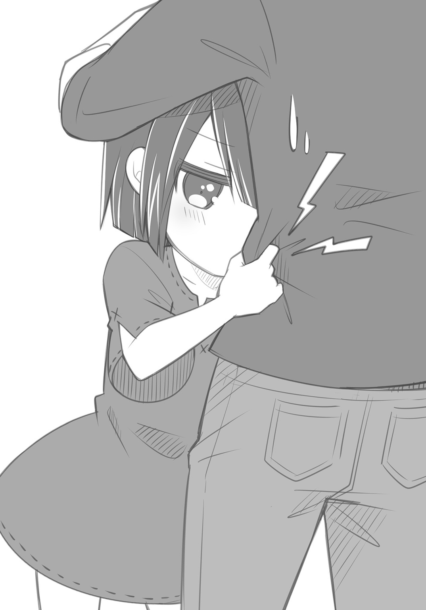
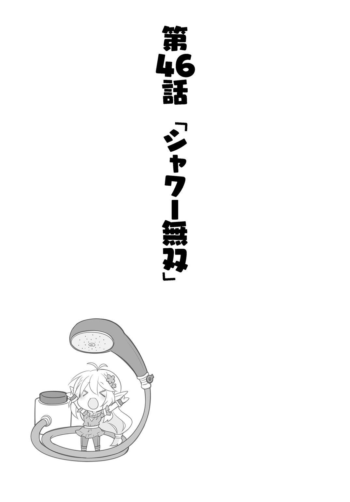
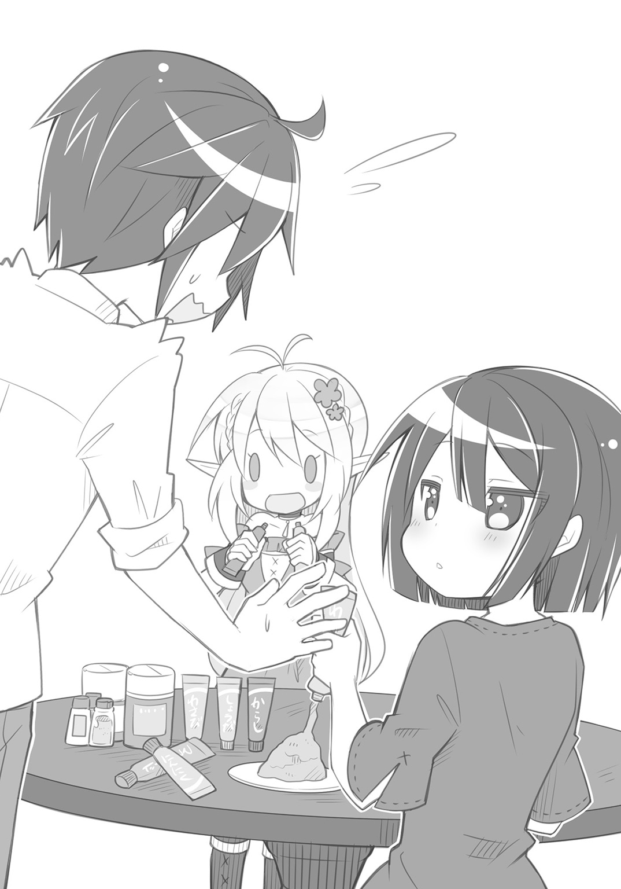
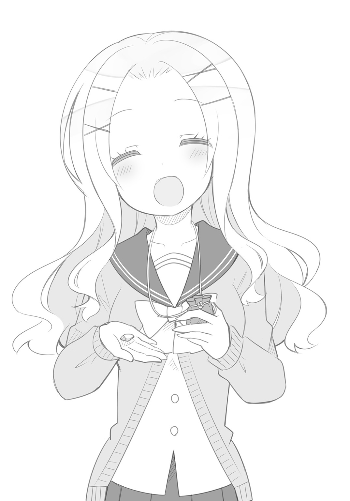
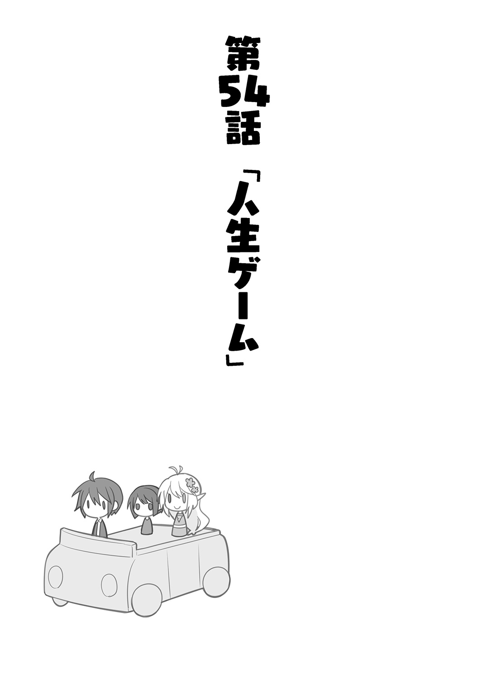

| 異世界Cマート繁盛記 3 | |
| 新木伸 | |
この本は縦書きでレイアウトされています。
また、ご覧になる機種により、表示の差が認められることがあります。
 ダッシュエックス文庫DIGITAL
ダッシュエックス文庫DIGITAL
異世界Ｃマート繁盛記３
新木 伸
「おーい。ただいまだぞー。帰ったぞー？」
店の前までやってくると、俺は、いきなり入ってしまう前に、まずそう声をかけた。
ええと。どんくらいだっけ？
じつはけっこうしばらく店を空けていた。ずっと向こうに行っていたが、いま、ようやく戻ってきた。
「ま、ますたー......？」
バカエルフのやつが、戸口に立っている。
なにか信じられないものでも見るような顔で、俺のことを見ている。
おや？ ちょっと瘦せたか？
「マスター！ マスター！ マスタあぁぁ!!」
「ほぐう」
もんのすげータックルが腹にきた。路上に押し倒されかねない勢いだ。
俺はなんとか踏みとどまった。バカエルフは、俺にしっかりとしがみついてくる。
「マスター！ マスター！ いなくなっちゃったかと思いましたよ！ もう帰ってこないんじゃないかって！」
「はぁ？」
俺はバカエルフの顔を引き剝がした。
うええ。きたねえ。ハナミズついたー。
いくら美少女でもハナミズはハナミズだ。ばっちー。きたねーっ。えんがちょー。
「んなわけねーだろ。俺が帰るところは、ここしかねえんだから」
ナミダまみれ、ハナミズまみれのバカエルフに、そう言った。
なんでそんなあたりまえのことを言わなきゃならんのか。
――と。視線を感じて目をあげれば、エナのやつが、戸口のところで立っていた。
バカエルフのやつはロケットタックルで飛びついてきて、泣くわ取り乱すわ、ハナミズ撒き散らすわで、大騒ぎだが。
エナのやつは、何歩も離れたところで、切なげな顔で立ち尽くすばかり。
バカエルフみたいにバカになったらいいのに。そうなれないのが、エナという子なのであった。
「ああ。そうだ」
俺はバカエルフの体を、ぽいっと、脇へ投げやった。
相撲でいうところの〝うっちゃり〟というやつ。
「エナ！ ――こいこい！」
腕を広げてエナを呼ぶ。
エナは数秒、ためらいを見せてから――たたたっ、と、駆けだした。
ぼふっ、と、俺の胸に飛びこんでくる。
ほら。おまえだって。さびしかったんじゃん。
もっと表に出していいんだぞ。じっと我慢していなくたっていいんだぞ。
そう思いつつ、エナの黒い髪を、撫で撫でとしてやっていたら――。
「いてててて」
エナに脇腹を、ぎゅーっと、つねられた。
痛い痛い痛い。まじちょっと痛い。
エナさんごめんなさい。そんなに怒っていらっしゃってましたか。
あまり感情は表に出さないでいていただけると助かります。
「そっかー。えーと。何日だっけ？ 一週間は軽くぶっちで......。二週間くらいにはなるか。こっちでも二週間経ってたか？ えーと、何十セムトの一四倍とかだ」
エナは、こくこくと、黒髪を振って答えてきた。
「ごめんなー」
俺はエナの黒髪を撫でた。
いやー。俺は俺で大変だった。じつは色々あった。帰ってこれない事情があった。
いつもの仕入れをして、あと、ほとんど寄らない部屋の掃除くらい、たまにはやるかと、あちらの世界で借りてるアパートの部屋に立ち寄ったところで、電話を食らった。親戚が死んだとかどうとかで、そのまま田舎まで強制連行。記憶を探っても、まるで憶えのない人の葬式で数日間足止めをされた。あと何年も顔を合わせていない親からは、見合いをさせられた。信じられるか？ 見合いだぞ。見合い。

俺は結婚なんかしねーっつーの。するんだったら恋愛結婚だっつーの。
ようやく街まで戻ってくれば、今度は、美津希ちゃんが青い顔。質屋のじいさんが、なんと入院してしまったとのこと。
単なるぎっくり腰だったが、年寄りのそれはかなり長引いて――俺は店のある美津希ちゃんのかわりに、ほぼ一週間も、付きっきりになってやっていた。美津希ちゃんは事あるたびに、ごめんなさいごめんなさいと、辛気くさい言葉を口にする女子高生になってしまうし。爺さんは、したり顔で「許可してやってもよいのだぞ」とか、わけのわからんことを口走るようになるし。ボケたのかと思ったがそうではないらしい。だいたいなにを「許可」するんだっつーの？
そういう、色々なことを、一切、言いわけにせず――。
俺はエナの髪を撫でて......ただ、謝った。
「ごめんなー」
「......いい。かえってきてくれたから」
エナは俺のお腹のあたりに、ごしごしと顔をすりつけている。
ハナミズが出ているかどうかは、わからない。もし仮にハナミズが出ているのだとしても、そんなの、べつにかまわない。
「マスター......。ひどいですー......」
地べたからバカエルフが言ってくる。
そうか？ ひどくないよな？
バカエルフのやつは、うっちゃりを食らって、地べたで擦った顔面を、さすっている。
べつに......、ひどくないよな？ ごくふつうで、あたりまえの対応だよな？
......だよな？
「......おまえが腹を減らしているんじゃないかと思って。ほれ。缶詰......。たくさん持ってきてやったぞ」
俺はビニール袋を差し出した。
ふだんは買わないような高級犬缶だ。おみやげだ。
「わっふ！ わっふわっふ！」
バカエルフのやつは、ビニール袋に飛びついてきた。
とっとと奪って、ぴゅーっと、店の中に運んでゆく。
「マスター！ エナちゃーん！ ごはんごはん！ ごはんにしましょーっ！」
店の中から、バカエルフの賑やかな声が聞こえる。食器とスプーンを楽器にして、ちゃんかちゃんかちゃんか――と、楽しげな曲まで聞こえてくる。
「なあエナ......、ずっと摑まっていられると、俺は動けないんだが？」
俺はお腹にしがみつくエナに、そう言ってみた。
だがエナは、顔をごしごしと擦りつけるようにして、イヤイヤと首を横に振るばかり。
どうやら俺は、もうしばらく、こうしていなければならないようだ。
エナが解放してくれるまで......。それから一五分ほどかかった。
いつもの昼下がり。いつものＣマートの店内。
俺は商品の陳列を直すふりをしながら、横目で、クソガキ――もとい、お客様を見つめていた。
床の上にぺたんと座りこんだお子様が、店の商品を開いて、じっくりと読みこんでいる。
店の商品というのは、本だ。
図鑑というやつだ。
向こうの世界の文字は、こちらの世界の人は読むことができない。（除くバカエルフとエナ）
そのことは俺も知っていたから、文字の少ない本――たとえば図鑑や絵本みたいなものであれば、絵や写真だけで楽しめると思って、何冊か、適当に見繕って持ってきていたのだ。
こっちの世界にも本はあるのか。まったく見向きもされていなかった品物だったが、クソガキ――もとい、男の子と女の子の二人連れのお客様が、大変なご関心をお持ちあそばされた。
床にべったりと座りこんで、どっぷりと読書中。
しかもバカエルフのやつが、横につきっきりで、読んでやっているものだから――。
俺も注意がしにくい。
まあ、もともと儲けるつもりでやっている店ではないのだし――。
ガキどもに、ぺたぺたと手垢をつけられまくって、商品が台無しになったところで、べつに困るわけでもないのだが――。
そんなことを考えていると、バカエルフがこちらを見て、くすりと笑ってきた。
「なんだよ？」
「いえ。マスター......。優しいですよね」
「どこがだよ！」
俺は激オコになった。
言うに事欠いて、優しい？ 俺が優しい？ どこが？
やっぱこいつ。バカエルフ。もお一生バカエルフ決定。
「これは大変に興味深い学説ですよ」
クソガキの片割れが図鑑を見ながらそう言った。
見た目一〇歳ぐらい。異世界の子たちは、どうも成長がよろしくないようで、これでじつは一三歳ぐらいなのかもしれないが、それでもとにかくお子様には違いない。
耳も尖っていなくて人間耳だから、見た目通りの年齢で間違いないはず。
なのに、ずいぶんと大人びた口をきく。
ちなみに読んでいる図鑑は、『地球・宇宙』。
「独創的な発想ですよ。地球というのが、我々の住む大地であり、それが〝太陽〟というものを中心点として回っているなんて。僕は常々〝地動説〟なるものを提唱しているのですけど。誰もまともに聞いてくれなかったんですよね。そうか。地動説の蓋然性を増すためには、〝中心点〟の設定が必要だったんだ。この視点はなかったなー。勉強になるなー」
ガキのくせに小難しい話をぺらぺらとくっちゃべる。
「おま。キングの同類かっつーの」
俺は思わずそう言った。
「キング？ ええ。はい。お世話になってます。研究所を持たせていただいて――。ああ。こちらのお店は、キングに聞いたんですよ。滅多に褒めることのないキングが言っていたので、どんなお店かと興味を持ちまして」
俺は顔をしかめた。
ほーら！ やーっぱ！ 同類だった！
キングの口コミで来たわけだ。
そういや、そのキングも、へっぽこ冒険者の口コミでやってきたんだった。
まーったく。誰が宣伝してくれって頼んだよ。余計なことしやがって。
「マスター。ツンデレになってますよ」
「だからおまえは！ 人の心の声にツッコミいれてんじゃねえぞ！」
俺は怒鳴った。
器用なことしやがって。
てゆうか。俺。顔に出てた？ それともまさか口に出して喋っては......、ねえよな。
「――そっちの子も？ キングのダチか？」
「いえ？ 僕もここで一緒になっただけでして」
「そうなのか」
年齢が似た感じだったから、てっきり友達かなにかなのだと思った。
俺はもう一人の女の子を、じっくりと見つめた。
こっちの子も、おなじように、ぺたんと座りこんでは、図鑑を開いている。
ちなみに読んでいる図鑑は『海の生き物』。
「あたし？」
女の子は、だいぶ遅れて、俺の視線と話題の流れに追いついてきた。
だいぶマイペースな女の子らしい。
「あたしはぁ〜、小説を〜、書いてます」
「小説？」
「そうです。ファンタジー小説なのれす〜」
間延びした喋りで、女の子は言ってくる。
「なのれす？」
「なのれす」
女の子は、ほにゃらん、と、返事をした。
なんか。この子。へんだ。
「マスター。けっこう有名な本なんですよー。ああそうだ。マスター。うちの店にも置かせてもらいましょうよー」
指先を合わせて、バカエルフが、なにかいいことのようにそう言った。
「ふざけんな」
「うふふふふ〜、サイン本は〜、買い取りなのれす〜。......いいれすか？」
「だめだっつーてんだろ」
だいたいファンタジー小説ってなんなんだ？
ここがファンタジー世界じゃないのか？
ファンタジー世界におけるファンタジー小説って、なんになるんだ？
「いま書いている作品に〜、出てくるモンスターの〜、イメージの参考に〜、たいへん〜、なります〜」
自称ファンタジー小説家はゆっくりとそう言った。
「海の生き物が？」
「こんな〜、ありえない生き物は〜、すごいです」
「どこが？」
海の生き物はモンスター図鑑ではない。
単なる普通の図鑑だ。魚とかエビとかカニとか貝とかウミウシとかイソギンチャクとかヒトデとか。そんなものの図鑑だ。
「この〝かに〟という〜、ハサミのついた〜、生き物は〜、どのくらいの大きさですか〜？ 何モーグありますか〜？」
「いや。モーグは知らんけど。せいぜい大きくたって......、三〇センチとか、そんなんだろ？――こんなんだよ」
センチで言っても伝わらないか。俺は手で大きさを示した。
「じゃあ、家一軒分くらいにします〜」
盛った！
「ハサミで、冒険者を、ちょっきんと〜、やります〜」
凶悪な怪物になった！
「こっちのイソギンチャクも〜、素敵です〜、インスピレーションが〜、もりもりと〜わきます〜。この怪物は、女冒険者の服だけ溶かすのです〜、そして〜、そのあとは〜、うふふふふふ〜」
18禁になった！
「やっぱうちじゃ置けんわ。その小説。うちは全年齢対象ショップだからな」
「そうれすか〜、残念れす〜」
◇
結局、学者のタマゴと、小説家のタマゴとは――。
図鑑をお買い上げになっていった。
それぞれ銀貨一枚ずつ。二冊で銀貨二枚の売り上げとなった。
まいどあり〜。ちゃり〜ん。
いつもの昼どき。いつものＣマートの店内。
「いっただきまーす」
「いただきます」
いつものように、声が二つあがる。
そして食前のお祈りが一つ。
......あれ？
ひとつ足りない。
「どうした？ エナ？」
俺はエナのやつに声をかけた。
目の前の缶詰を、エナはじっと見つめている。
「缶詰、いやだったか？」
いつもなら昼はオバちゃんのところに行って食うのだが、今日は色々とあって、缶詰の昼食となっている。
エナは、細い顎先を、ふるふると横に振って返してきた。
「じゃあ......、なんだ？」
「わたしも。それ。たべたい」
「ん？」
別の缶詰だ。
バカエルフの前に置かれた缶詰だ。
食料品は扱わないホームセンターでも、唯一、売っている缶詰だ。
元気に笑うワンコがラベルに描かれた缶詰だ。
バカエルフのやつが、ぱっかん、と開いて、皿の上で逆さまにする。
すっぽんと、円筒型に固まった固形物が、抜けて落ちてくる。
バカエルフは、スプーンを子供握りして、うまそうに食べはじめる。
おっふおっふ言いながら、がっふがっふと食べている。
「いや......、それは......」
俺はたじろいだ。
だいぶ前。バカエルフがあまりにバカでナマイキだったので、イタズラ心を起こして買ってきた、〝ある動物用〟の缶詰だ。
ためしに与えてみたら、喜んで食ってた。「おっふ！ すごい肉味です！」とかいって、バカエルフまっしぐらの勢いで食っていた。
なのでその缶詰は、バカエルフの主食となったのだった。
サンマ缶などと比べて、同じ値段でも缶詰の大きさ自体が違うから、量は何倍もあって、いい感じに薄味で、肉がごろんごろん入っていて肉味で、他のを食えといっても、それがないとバカエルフは一日しょんぼりしていたりするので、もう最近は仕方なくそればかり食わせている。
「いやー......、それはー......、だめだろう」
あれから気になったので調べてみた。
美津希大明神の言うところによると、べつに人間に害になるものは入っていないそうだ。〝その動物用〟の缶詰を人間が食べても体を壊したりはしないらしい。
動物用とはいえ、人間も同じく〝動物〟ではあるわけで、考えてみれば当然のことだった。
ペットフード売り場の店員さんの中には、自分で〝味見〟をしている人もいたりするらしい。人間においしいものは、ペットにもおいしい。ペットにおいしいものは、人間にもおいしい。――ということだそうだ。
「いやー......、しかしー、やっぱりー......、だめだろう」
俺ははっきりとしない物言いで、そう言った。
「なんで？ したいことあったら、言えって......。そう言ったよ？」
エナは、はっきりとした声と顔で、そう言ってきた。
「う」
俺は言葉に詰まった。
言った言った。
俺は言った。
エナのやつが、いつもいつも、いーっつも、遠慮して人の顔色ばかり窺っているから、したいことがあったら言え、嫌なことがあっても言え、ガキはガキらしくずうずうしくしろ。
むしろずうずうしくワガママ言うのがガキの仕事だ――ぐらいのことを、しょっちゅう言っている。
「わたしも。エルフさんと同じ缶詰が食べたいです」
うわぁ。はっきり言ったよ。ド直球きたよ。
「ん？ ん？ んんー？ なんですかなんですか？ わたしの肉を横取りする話ですか？」
バカエルフのやつが、皿から顔をあげる。
口の端についてるぐらいなら愛嬌にもなるが、こいつの場合は口のまわりじゅうべったりだ。
こいつ。美人のくせに、食いかたは品がねえ。エルフの里を追放されるのも、わかる気がする。
「たとえエナちゃんでも、肉をとったら――嚙みます」
うわあ。言ったよ。はっきり言ったよ。
大人気ねえよ。
「べつにおまえのを取るなんて言ってねえよ。エナがそれを食いたいって――」
「あげません」
「だからおまえのいま食ってるそれじゃねえよ。いいから食ってろよ。おまえ面倒くせえから」
俺がそう言って約束をすると、エルフの娘は安心して食事に戻った。
ほんとバカ。バカエルフ。
同じ缶詰は店の隅に山積みにされている。
エナの視線は、そっちをじーっと見ている。
俺はどうやって言い逃れをしようか、ひたすらそればかりを考えていた。
「あれは......、つまり、大人用なんだ」
「せいけんよう、って、それ、そういう意味なんですか？」
うえっ。読めるのか！
どうやらエナは、がんばってバカエルフから文字を教わっているらしい。
俺の世界の文字を、もうそこまで読めるようになっているとは思わなかった。
「そ、そうそう......、〝成犬〟っていうのは、つまり、おとな、って意味なんだ。だからエナには――」
「わたし。おとなだよ？」
うわああ。
あー。だめだ。
この年頃の女の子の地雷を踏んでしまった。
小学校高学年ぐらいとはいえ、思春期なわけだ。
あの頃のガキは自分はもう大人だとか思っているんだ。だいたい高校生ぐらいまで続くんだそれが。そこを過ぎて自分は〝ガキ〟だと思うようになってからが、本当の大人の始まりなのだが。
「そ、そうだよな......、エナはもう、立派なおとなだよなー」
俺は調子を合わせて、そんなこと言った。
じーっと見つめる、エナの視線が、俺に向けられる。
まっすぐ覗きこむような視線だ。
それが痛くって、俺はついつい、目を逸らした。
エナのほうを向けなくなってしまった俺は、テーブルの向かい――バカエルフのやつに、助けを求める視線を送った。
がっふがっふと食っている。
おっふおっふと喜んでいる。
すっかりだめだった。
まったくだめだった。
テーブルの下で、向こう臑を蹴る。
なんのリアクションもないので、蹴る蹴る、もっと蹴る。
ぜんぜんだめだった。
食ってる最中は、こいつ、気づきもしねえ。
「あの。......なんか？ 困って......ますか？」
「え？」
エナのやつが、そう言ってきた。
「わたし。だめでした？ 困らせてます？」
「いやいやいや。そんなことはないぞ。そんなことはまったくないからな」
俺は手を振った。
困っているのは、強いていえば――俺の自業自得というやつで。
バカエルフがバカであるせいで――。
とにかくエナのせいでは、まったくない。
「缶詰。諦めます。困らせるつもりじゃ......なかったから」
エナはしゅんとなってしまった。
あー。あー。あー。
「むっふっふー。特別なのですー。これはわたしにのみ許されたー、肉味のごはんなのですよー」
バカエルフのやつが、得意げにそう言った。
聞いていないと思っていたら、しっかり、聞いてやがった。
フォローするでもなく、火に油を注ぎやがった。
「いいなぁ......」
指をくわえるエナ。
がっふがっふと、見せびらかすように食べるバカヤロウなエルフ。
俺は後悔した。
大後悔だった。
やっぱ。うそ。いくない。
本当のことを言えれば――。
言っていれば、こんなに苦しくはなかったのだが。
エナに対しても説明不能の、わけのわからない理由で聞き分けさせることもなく、しゅんとさせずに済んでいたのだが――。
うそはやめよう。
俺は固く心に決めた。
せめてもということで――。
その日は、肉系の缶詰をたくさん開けた。
エナにはたくさん食べさせた。
いつもの昼下がり。いつものＣマートの店内。
「あの......、おちゃ、......です」
エナが来客に、そぉーっと、お茶を出しにいく。
「ええ。ありがとう」
ハンサムの爽やかスマイルを浴びると、人見知りのエナは、さささーっと引っこんでいってしまった。
バカエルフのお尻の陰から、こそっと、顔半分だけ出してこちらを見ている。
わはははは。かわいー。かわいー。
「まだしばらくは、こちらにいるんですか？」
俺は商人さんにそう言った。
この人は、あちこちと交易をやっている人。
俺がこの世界に来たときに、二番目に親切にしてくれた人だった。
そのときの俺は、塩を金貨一枚で売っていたのだが、それじゃ安すぎますよと、わざわざ教えにきてくれたのが、この人だ。
あちこちを回っているこの人の言葉には、重みがある。
俺はこの人がきたらお茶を振る舞って、色々と話を聞くことにしていた。
「そろそろ出発しようと思っていますよ。品がだいぶ溜まってまいりましたので」
商人さんは、一匹の獣を相棒にして交易をしている。その獣の背中に載せられるだけの品を溜めると、よその街に向かうわけだ。
「こんどは、どちらへ？」
「まえのほうに」
この世界では東とか西とかいうかわりに、「まえ」とか「うしろ」とか言うらしい。
なんだかへんな気もするが、そういうもんだと割り切って、いちいち深く考えないことにしている。
バカエルフが言ってたら、まずまともに信じなかったろうが、あちこち歩いているこの人が言うのなら、そうなのだろう。
ちなみに「北」と「南」に相当する言葉は、まだ聞いた覚えがない。
「なにかいい品はありますか？」
「うーん......」
俺は腕を組んで考えこんだ。塩と緑茶の葉は、もういっぱい渡してある。
角砂糖とコンビニ袋とプチプチシートは、それぞれ別々の理由で、商人さんのお眼鏡にはかなわなかった。
他にうちの店のヒット商品といえば、なんだっけ......？
交易の商人さんの抱える問題は、Ｃマートの抱える問題と、だいたい同じだった。
重さと体積と喜び度が、品物選択の基準となる。人気のある品でも、それが重いか、かさばるものであれば、大量には運べない。
お客さんの喜び度は、品の価値と量の掛け算となる。
この商人さんは、俺と同じなのだ。いかにして一回の交易でお客さんの笑顔を増やすか。そのことばかりを考えているわけだ。
「ほかには、めぼしいものは、ないかな......。俺以外に運び手がいれば、もっと持ってこれる物の種類も増やせるんですけどねー」
「ほらエナちゃん。マスターが敬語ですよ。けーご」
「うん。しらない人みたい」
失礼なことを言ってる店員二人に、俺は、かーっと歯を剝きだした。
きゃあきゃあ言って、しばらく騒がしくなる。
バカエルフ。ほんとバカ。
エナ。ほんと。かーいー。かーいー。
「そういえば。ひとつお聞きしようと思ってたんですが」
「なんでしょう？ なんでも聞いてください」
俺はふと思い出したことを、この人に聞いてみることにした。
この人なら答えられるんじゃないかと思ったからだ。
「なんていうか。ちょっと説明しづらいことなんですが......」
俺は話しはじめた。商人さんはじっと辛抱強く、俺の話を聞いてくれている。
「俺がここにやってきたとき。みんな。妙に親切だったんですよ。オバちゃんなんて、メシ食わせてくれましたし。あなたも困っていた俺に、いろいろ教えてくれましたし」
「マスターも、わたしにごはんをくれましたよー」
「わたしには......、飴ちゃん、いっぱい......くれたよ？」
商人さんは、二人に笑いを向けてから、俺に顔を戻した。
「いいじゃないですか。親切の連鎖で」
「いや......。なんていうか。これは俺のいた世界の話になるんですけど。みんながこんな親切なわけではなくて......。もっとギスギスしてるっていうか。自分だけ得をしようとしている連中がいっぱいっていうか......」
「なるほど。貴方の世界は、そうなっているんですね」
「みんな、こんなに親切だと――。騙されちゃったりしないんですか？」
「心配ですか？」
商人さんは、じっと俺の目を見つめてくる。
「たとえば俺が、あなたのことを騙そうとしていたら？」
「あなたは騙さなかったじゃないですか。あのときは袋の中身はすべて本当に塩でしたし。今回も全部そうなんでしょう？」
今回の取引は、塩の袋が数十キロほど。その見返りが砂金の大袋。
どちらも中身を確かめていないところが、お互いの深い信頼を示しているわけだが。
「もちろん、そうです。......たとえばの話ですよ？」
「もし貴方が私を騙すつもりでしたら、ころりと、騙されてしまうでしょうね」
「ほら」
俺は言った。
「ええ。......一度は」
商人氏は、そう付け加えた。
「一度......ですか？」
「ええ。一度は騙されますよ。でも二度は騙されません」
「えーと......？」
「こちらの世界でも、人を騙すような人は、たしかにすこしはいるんです。私はあちこちでいろいろな人と会いますから。そういう人とも、実際に何度か遭遇したことがあります」
「そのたびに騙されてるんですか？」
俺は思わずそう聞いていた。
「ええ。一度は」
商人さんは、またそう言った。〝一度は〟のところが、妙に、俺の心に引っかかる。
「えーと......、それは、どういう......？」
「こういうの、なんていうんでしたっけ？」
商人さんはバカエルフに話を振った。
「エルフの里では、四行原則っていってるですよ」
バカエルフはお菓子の袋を開けて、お皿に盛りつつ、そう返す。
ちなみにエナは緑茶係だ。カセットコンロとにらめっこして、お湯が沸くのをじっと待っている。
「ああ。そうでしたそうでした。私は学問は専門ではないので。ありがとうございます。――と、その四行原則というルールに、みんな則っているだけなんですよ」
「よんぎょうげんそく......ですか？」
「ええ。四行で書き表せる、簡単なルールです。誰でもできます。なぜそれが行えない人がいるのか、理解に苦しみます」
「えーと、えーと......」
俺は困った。
どうも大事な話が交わされている気がするのだが、ぜんぜん、わからない。
「そ、それは......、どういった......？」
「貴方はすでに実行なさっているじゃないですか。必要ないかと」
「いえいえいえ。わかってないのはヤバいです。怖いです。このさい教えておいてください。この通りです」
俺は頭を下げた。
「マスター。わたしが教えましょうかー？」
「うるせー。だまってろ」
「はい。お菓子どうぞー」
「どうせならもっといいやつだせよ」
よりにもよって、選んだチョイスは、かりんとうと、おせんべいか。おまえはバアちゃんか。
「お......、おちゃ......、お、おかわり......」
「ああ。エナはいい子だな。ありがとう」
「ありがとう」
エナは、また、ささーっと逃げていった。
うはははは。やっぱ。かわいー。かわいー。
「――で。その四行原則、とか、いうのは？」
「ええと......。私は学問が専門ではないので、怪しいのですが......」
と言いつつ、商人さんは、書く物を探した。
俺はメモ用紙とボールペンを渡した。商人さんはしばらくボールペンを研究していたが、はっと、使いかたに気がついて、紙にメモを取った。
「こんな感じでよかったですかね？」
もちろん、商人さんの書いた文字は、俺には読めない。
メモはバカエルフの手に渡って、もう一枚のメモに日本語として書き直される。
そうして――。
俺の前に出てきたメモには――。
１．はじめての相手には親切にせよ。
２．親切だった相手には、親切にせよ。
３．裏切った相手には、同じ仕打ちをせよ。
４．頭にもどって繰り返し。
――と。
こんなふうなことが書いてあった。
「この原則に基づいて行動していれば、一度は騙されますが、二度は騙されないわけです」
なるほど。
延々と騙され続けるわけではないのだ。一度でも裏切りをすれば、二度目からは信用されないのか。
「頭から疑ってかかったり、あるいは、頭から騙してかかるような、そういった四行原則と違うルールで動くことは、長い目で見て得ではないことが、経験的に証明されています」
「証明されているんですか......？」
「ええ。この通り。多数派じゃないですか。私たちみたいな戦略的お人好しの人間が」
商人さんは両手を広げて、そう言った。
俺はバカエルフを見た。エナを見た。
そして、店の壁に阻まれて直接は見えないが、オバちゃんの店の方向を見た。
「......なるほど」
俺がそう言ってうなずいたのは、だいぶ時間が経ってからのことだった。
この世界の人々は、単にお人好しなわけではなかった。
確信犯的なお人好しというか......。腹を括ったお人好しというか......。
見知らぬ相手にも、一回は騙されてやってもいいと思っているから、ああいう、カラっとした笑いができるのだ。
俺はこの世界が、すごく好きだった。
この世界の居心地がいいのは確かだった。
しかし一方で、皆がお人好しすぎて、すこし心配になってしまうこともあった。
この世界の人々は、根っからのお人好しで、もし悪いやつが一人でもやってきたら、騙され放題、利用され放題になってしまうのではないかと......。
いらない心配だった。
俺は大いに安心した。
そしてこの世界のことが、もっと好きになった。
安心して、かりんとうをかじって、せんべいをばりばりと新品の奥歯で嚙み砕いていた俺は――。
ふと、一つのことに思い至った。
「あれ？ ......ちょっと待ってくださいよ？ じゃあそうすると......。俺、もしも、はじめのときに、オバちゃんや、あなたのことを騙していたりしたら......？」
「当然。信用しませんでしたよ？ 四行原則に基づいて」
商人さんは、そう言った。
変わらぬハンサムスマイルを浮かべる。
俺は、ぞーっと背筋が寒くなった。
どういうことになるのかは、すっごく、よくわかった。
こちらの世界の善人ルール......。こええー......。

いつもの午後。いつものＣマートの店内。
「なんですかー。なんですかー。それは食べるものですかー？」
持ってきた品物の包装をばりばりと破って使えるようにしていると、頭のてっぺんの後ろ側から、声がかかった。
「ん」
俺は品物の包装のビニール袋を差し出した。
バカエルフのやつは、俺から受け取ったそれを――口に入れた。
「おいしくないです〜......」
さすがバカエルフ。バカなことをやっている。
ベタなボケなのかと思いきや、どうもこいつの場合には、本気っぽい。本気でビニールが食えると思ったっぽい。
そんなやりとりを、エナが見ている。くすくすと笑っている。
「――ご、ごめんなさい」
目線が合うと、そんなことを言って、すぐにうつむく。
二言めには、すぐ謝りの言葉を口にするのだ。このやせっぽちのちびすけは。
俺はエナを手招きした。
近くにやってきたエナに、この品物を説明してやる。
「これはな。水タンクだ」
俺はそう説明した。
白い半透明のプラスチックの水タンクだった。ホームセンターでいくらでも売っている。
容量は大きめで二十リットルぐらいのやつ。
水を満タンに入れると、俺でも運ぶのに苦労する。
やせっぽちのエナじゃ、持ちあがりもしないだろう。バカエルフは意外と馬鹿力なので、いけるかもしれない。
「はい。食べ物じゃないですね」
「うむ。食べ物じゃないな」
二人してうなずきあう。ちらりとバカエルフに流し目をくれる。
「食べられると思ったんですよー。だってー。マスターがくれたんだもんー」
俺はおまえに食い物しかやってないみたいだな。――まあだいたいその通りだが。
馬鹿なバカエルフは放置して、俺はエナに説明を続けた。
「んでもって、こっちはだな――」
「あうとどあ、ぽんぷ......ですか？」
「おー。読めるのかー。かしこい。かしこい」
俺はエナの頭を撫で撫でとしてやった。
ひらがな、カタカナぐらいは読めることは知っていたが、英語まで読めるようになっていたとは。
「わたしが教えたんですよー。わたしのほうがもっと賢いですよー」
バカエルフがなにか言っている。ほうっておく。
「これは〝シャワー〟っていうものだな。風呂についてるもんだ」
「お風呂......ですか？ あの筒の？」
「いや。あれも風呂だが。これも風呂なんだな」
どうもこちらの世界では、ドラム缶風呂のことが、風呂だと認識されてしまっている。
他に風呂がないものだから、風呂、イコール、ドラム缶となっているわけだ。
風呂屋はこのあいだ出来た。裏手にある。何本もドラム缶みたいな鉄の筒が立っている。
我がＣマートの一同も、その風呂屋を利用させてもらっているのだが......。
風呂屋は大人気ということもあって、毎日三人で押しかけるのも悪い気がしている。だから三日に一回くらいにしているのだが――。
くんくん――。
俺はすぐ隣にある、エナのつむじのてっぺんを――嗅いでみた。
うん。必要だわな。
「痛ててててて。おい。痛いって」
脇腹のところを思いっきりつねられて、俺はうめいた。
力のない子供でも、皮だけつねられると、めちゃくちゃ痛い。
「へんなことするからです」
「マスター。マスター。わたしもチェックしてくださぁい。チェック、チェック、ちぇっくぷりーず♡」
「おいバカエルフが俺にへんなこと強要してくるぞ」
俺たちは笑った。
「――で。これはその問題を解決するアイテムというわけだ」
俺はすっかり包装を解いて、その品物をエナに見せた。
これは水タンクに取り付けるタイプのシャワーだった。
どの風呂場にもあるようなシャワーヘッドから、ホースが伸びている。違うのは壁に繫がっていなくて、タンクに取り付けるためのキャップがついているというところだ。
水タンクの蓋を外す。
〝アウトドアポンプ〟という名前のシャワーの本体は、タンクのねじ穴にぴたりとはまった。
そして、手で押す方式のポンプを、しゅっこしゅっこと、何回か押した。
電池で動くタイプのアウトドア・シャワーも、あったのだが......。
こちらの世界には電池がないし、電気で動く物を持ちこんでしまうと、電池ばかり輸入するはめになることが目に見えている。
よって、電気で動く物はなるべく避けていた。
「――と。こんなもんでいいかな」
ポンプを充分に動かして、充分に空気を溜めこむ。
ホースの先に取り付けられているシャワーヘッドを手に持って、レバーを動かすと――。
「きゃっ」
ヘッドから出た水がエナの手にかかった。
女の子らしい悲鳴をあげて、エナはびっくりしていた。
尻餅までついて驚いている様が、なんとも面白くて、俺はもっと水をかけた。
エナの手をいっぱい濡らした。
「うはははは......、痛い痛い痛い痛い――ごめんなさい」
脇腹をつねられる。
こんどは、あとが残るくらい、きつくやられた。
「やってみるか？」
シャワーをエナの手に渡した。
エナはシャワーで遊ぶ係。
俺は威力が弱まってきたら、せっせとポンプする係。
しゃーっと流れる水を、エナはそこかしこにかけている。
「あのー。お楽しみのところもうしわけないのですがー。お二方？ そーゆーのは、表でやったほうがいいかと存じますですよー？」
「うおっ」
「あわわっ」
店の床がびっしょりだった。水浸しだ。
俺たちはバカエルフに言われて、追い出されるように店の外に出た。
そしてタンクが空になってしまうまで、水遊びを行った。
「でなくなっちゃった」
水の出なくなったシャワーを手に、エナがつぶやく。
「ああ。そうそう。忘れてた」
俺はすっかり忘れていたことを思いだした。
単なるテストでやっていたのだった。水遊びをするためでもなく、エナを喜ばせるためでもなくて――。
「これは本当はな。水じゃなくてお湯を入れようと思ってたんだ」
俺はそう言った。
お湯なら鍋でもヤカンでも沸かせる。百度のお湯を数リットルほど沸かして、水で割れば、適温のお湯が二十リットルぐらいできて、タンク一杯となる。
「へー。お湯......、ですか」
「そうそう。そうすりゃ、風呂屋に行かなくても、毎日、体が洗えるだろ」
「毎日......」
エナは――ぱっと、頭をかばうようにして両手をのせた。
さっき、つむじのあたりをくんくんとやった。そのことをまだ根に持たれている感じ。とがめるような視線を向けられる。
「お湯。沸かすのですか？」
バカエルフが聞いてくる。
「ど、どうする？」
俺はエナに聞いた。
エナがこくりとうなずいたので、俺はすこしほっとした。
またつねられるかと思った。
◇
お湯が沸く。
沸騰すると、ピーッと音の鳴るレトロなヤカンが、Ｃマートでは大人気だ。
タンクに水と一緒に入れると、思った通り、適温の湯となった。
「さ。準備できたぞ」
俺が言う。
エナは顔を輝かせて――それから、その顔を曇らせた。
「あ......。えっと。でも。どこで？」
エナはきょろきょろとしている。
俺は学習していた。
こちらの世界の人たちは、なんでか知らんが、路上で裸で行水とか、平気でやるのだ。
まるで〝性別〟というものがないかのように振る舞う。
そりゃまあ......。たしかに......。たとえば世の中が男だけだったりすれば、路上で素っ裸になっていたって、誰も気にしたりはしないのだろうが......。
こちらの世界では、男も女もいるというのに、なんでか、そういう感じなのだった。
バカエルフが素っ裸で行水していたって、俺以外の誰も気にしたりはしない。「発情期じゃないから平気ですよね」とか言って、平気で肌をさらすのだ。わけわかんねえ。
裏の風呂屋でも、野外に立てられているドラム缶風呂に、男も女も気にせず入っている。
青い空の下、隣りあった者同士で、気楽に世間話などをやっている。
とまあ、そんな感じなので――。
俺もエナには気楽に言った。
「そこでいいんじゃね？ そこで、ずばーって脱いで、シャワー浴びれば」
〝そこ〟とゆーのは、店の前の路上のことだ。
ほれほれ、とシャワーヘッドを振って、エナに渡そうとすると――。
ばっしーん！
ひっぱたかれた。
ほっぺたを。
「痛ってえー」
俺はしゃがみこんで、ほっぺたを押さえていた。
エナは怒った感じでどっかに行ってしまっていた。
「マスター。マスター」
「ええっ......。なんでえ......っ？」
「ねえマスターってば」
「ええっ？ どうしてーっ？」
俺はハテナマークを頭の上にいくつも浮かべていた。
しきりに自分の胸に聞いていた。
「わたしもシャワー浴びたいです」
「うっわ。怒ってたー？ なんで怒ってたー？」
「マスター？ きいてますか？ マスター？」
「俺、なんかダメだったー......っ？」
「じゃあ先に浴びちゃいますよー？」
バカエルフのやつが、するっと着ていた物を脱ぐ。
ずばーっと脱いで、店の前の〝そこ〟で、温水シャワーを浴びはじめる。
〝そこ〟とゆーのは、店の前の路上のことだ。
ほら。やっぱ。いーんじゃん。
俺。間違って。ねーじゃん。
「あー。マスター。石鹼とってください。石鹼」
俺は店の人気商品の石鹼を、一箱、開けると――。背中越しに、バカエルフに向けて放ってやった。
ほらやっぱ。マッパで道端で行水してるじゃん。
俺以外の誰も気にもしてねーじゃん。
へんなエナ。へんなエナ。へーんな、エナー。
◇
その後。
バカエルフが身を張って〝宣伝〟したおかげで、「シャワー」は売れた。Ｃマートの人気商品となった。
おこりんぼのエナには、カーテンで仕切ったシャワースペースを作ってやった。
いつもの昼過ぎ。いつものＣマートの店内。
「ずいぶん貯まりましたねー」
「そういや。そうだな」
バカエルフが言うので、俺は適当にうなずいた。
カウンター脇の隅っこに、大きな壺が置かれている。
売り上げのお金を入れてある壺だ。
この世界には、どうも、〝紙のお金〟というものはないらしい。
よってすべて貨幣だ。コインだ。銅貨と銀貨と金貨だった。
そういえば錫貨というものもあった。
ガキが一二枚持ってきて、銅貨一枚のお菓子を買っていったから、その錫貨一二枚もきっとどこかに入っているはず。
「おかね。いっぱい......です」
エナが蓋を開けて、覗いて、感嘆の声をもらしている。
一日分の売り上げは、数えてから、そこに入れている。数えるのは俺かバカエルフがやる。
なるほど。エナは今日まで知らなかったわけか。
そんなところに大金があるとは思わなかったので、驚いているのだろうか。それとも単に大金に目を丸くしているのだろうか。
たしかにけっこうな大金になってしまった。
大きな壺の半分以上、貨幣がぎっしりと詰まっている。
はじめたときには、とりあえず同じ場所にまとめておこうと、一〇枚、二〇枚を壺に入れただけだったのだが......。
毎日続けていたら、こんなんに、なってしまった。
びっくりだ。継続は力なりだ。
「マスター。お金こんなに貯めて、どうするんですか？」
「ああ。それな。泥棒さんがやってきて、盗んでいってくれるのを待っているんだ」
我ながら洒落たこと言った。意識高いぜ俺。
――とか、ドヤ顔をして待っていたのだが。
バカエルフもエナも、二人とも、ぽかんとしていた。
「どろぼーさん......って、なんなんです？」
「なんですか？」
ああ。そこからなのね。
大金を鍵もかけずに置いといて、ずっとなくならなかったり。
店の商品が万引きされたりせず、留守のときにも、メモとお代が置いてあったりしたところから、うすうす察してはいたのだが......。
この世界には、たぶん、泥棒がいない。
たとえば店主不在で、無人販売をやっていたとしても、減った商品と、置かれてあるお金とが、ぴったり合うような、そんな世界なのだ。
「どろぼーさんというのはだな。人様の物を勝手に持っていってしまうやつのことをいうな」
「でも......、それって、困りません？」
バカエルフのやつは、ぷっくりとした唇に指先をあてて、上向きかげんで考える。
エナのやつも、その仕草を見習って薄い唇に指先をあてて、天井の同じところを見ようとする。
エナはカワイイ。
バカエルフは、わたし可愛いでしょう的なところが鼻につく。ほんとバカ。外見だけは美少女だからほんとヤバい。
「もちろん。困るよ」
「じゃあ。だめじゃないですかー」
「ああ。そうだな。だめだな」
「ほら。やっぱり。だめですよー」
話が終わってしまった。
この世界に泥棒と詐欺師がいない理由が、なんとなくわかった。
みんながみんな、こんな善人だったら、「だめですよー」「そうですねー」で話は終わる。
「それはそうと。この金。どうするかなー？」
俺は話を切り替えた。
壺の中身は、もう半分をこえている。そのうち溢れてしまいそうだ。
Ｃマートで扱う品物は現代世界のものだ。向こうでは「円」しか使えない。
砂金を持っていって例の質屋で日本円に換金しているが、金はえらい高値で売れるので、革袋一つ分の砂金を持っていけば、向こうでは二百万とか三百万とかいう大金になってしまう。
革袋一つ分の砂金は、金貨数十枚ほどにあたる。
仕入れのためには、そんなに日本円は必要ではないし。
こちらの通貨は、それこそ使い道がないしで――。どんどん貯まってゆく一方なわけだ。
「銀行でもやるかなー。それとも両替屋でもやるかなー」
俺は言った。
言ってみてから――。バカエルフとエナの顔を、ちらりと見てみると――。
「......？」
「？？？」
ああ。ほら。やっぱりだ。
「なんだよ。銀行もないのかよ」
「なんですか？ ぎんこーって？」
「銀行ってゆーのは、お金を貸したり預かったりする場所だ」
「貸す？ 預かる？」
「だから。大金を持ってたら、いろいろ不便だろ」
「なぜ？」
「だから。盗まれたり......って、そうか。盗まれないんだったな」
うーん。俺は腕組みをして考えこんだ。
そうか。どろぼーさんは、いないのか。
じゃあ盗まれたりはしないんだな。だったらずっと貯めといてもいいわけか。
「じゃあ。あれだ。お金が足りないときに、貸してくれるんだ」
「なぜ？」
「なぜって？ 足りないと困るだろ？ 貸してくれるところがあれば、おたがいにメリットがあるだろ」
「なんで貸してくれるんです？」
「それが商売だからだ。銀行の」
「お金を貸すと、なんで商売になるんです？ どんな得があるんで？」
「そりゃ利子を取るんだよ」
俺自身は銀行でお金を借りたことはないが......。銀行は金を貸すのが本業だということは知っている。それで利益を出している会社の一種だ。
あ。銀行の残高がマイナスになってるって、あれ、借りてることになるんだっけかな？ じゃあ何回かはあったかな。残高がマイナスになってて、びっくりしたびっくりした。定期くずすの、いやだったんだよなー。
まあ、つまり。
銀行は金を貸してくれるが、利子を取るということだ。
一年で何パーセントかの利子を取る。いや。何十パーセントか。
「利子を取るのは禁則事項だぞ。店主」
横から声がした。
誰の声かは聞いた瞬間にわかった。
「なんだ。キング。また飴玉もらいに来たか」
「うむ。あちらの世界の飴は、たいへんに美味だな」
キングはいつも飴をなめている。
最近のお気に入りは、いわゆるロリポップ・キャンデーというやつだ。現代日本産だ。ちょうど口に入る大きさの丸い球形の飴玉に、棒がついている、あれだ。
俺がオバちゃんの店で「ごはん永久無料」となっているのと同じで、キングも俺の店で「飴ちゃん永久無料」となっている。以前、一プラチナで「釣りはいらねえ」とか俠気溢れる払いかたをしていった。釣りを受け取ることを、頑として拒否したので、釣りのかわりに「飴ちゃん永久無料権」を進呈して、それで手打ちとした。
もっともキングに限らず、ガキは全員、「飴ちゃん永久無料」なのだが。
「んで。なんだって？ 利子取るのは禁止？」
「禁止ではなく、禁則事項だが――。まあ実用上は同じ意味だな」
「てゆうか。キング。おまえは知ってんのか。利子とか。......あと銀行も？」
バカエルフが椅子とテーブルを用意している。
エナはお茶の用意にかかっている。
役割分担がちゃんとしている。
「いろいろな世界から賓人はやってくるからな。銀行のある文明からの来訪者が来ることもある」
バカエルフの引いた椅子に、ぽんと飛び乗るように座って、キングは言った。
偉そうな口ぶりだが、身体的にはガキんちょだ。エナと同じかやや年下に見える。
「そうした者が銀行や両替商を始めようとしたときには、我々〝キング〟が訪れて、やめるように説得することになっている」
「なんで？」
俺は聞いた。なんか〝キング〟というのが自分以外にもいるような口ぶりだったが......。まあ、そこは置いておいて。銀行禁止の、その理由のほうを聞いた。
「利子というのは、なにもしないで、金が金を生むことだろう？」
「そうだな」
「それは理にかなっていないからだ」
「そうなん？」
「おかしいと思わないか？ 金というものは、本来、労働の対価として支払われるべきものだろう。金を貸して利子として金を儲ける者は、では、いったいなんの労働を行った？」
「うーん......」
俺は考えた。
生まれてはじめて、そんなことを考えてみた。
「なんにも働いていないな。ただ単に金を持っていただけだな」
「そこだ。金を持っている者が、ただ金を持っているという理由だけで、さらに金を持つようになる。その先にあるのは、果てしないインフレーションのみだ。経済をおかしくする諸悪の根源だな」
「そうなんか」
「いや。我々〝キング〟も受け売りだがな。はじまりの魔法使いが、そうルールを定めた。それ以来、守っているだけだ。そして実際にうまく回っているのだから、決まり事を変える必要もないだろう」
「はじまりの魔法使いって、なんだ、そりゃ？」
「それはですねー。マスター」
お菓子を俺の前に出してきながら、エルフの娘が言ってくる。
「ず〜っと、昔、昔に......。大地に大いなる魔法をかけた人ですよー」
「どんな魔法？」
「争いをなくす魔法です」
「どんなふうに？」
「マスター。争いが起きるいちばんの原因って、なんだかわかります？」
「わかんね」
俺は素直にそう言った。
てゆうか。テレビの番組みたいに、もったいつけてないで、とっとと答えを言えっつーの。
答えはＣＭのあとで、とか言ったら、怒るぞマジで？ チャンネルかえるぞ？
「争いが起きるのは、相手を理解できないからですよー。だからはじまりの魔法使いは、命をかけて、大地に、たった一つの魔法をかけました」
「へー」
だから、どんな魔法なんだよ？
「そのおかげで、わたしとマスターは、こうしてお話しすることができているんですけど......。大地の上に立っているかぎりは」
「意思疎通の魔法だな。言語によらず意思の直接伝達をする、偉大な魔法だ」
「わたしはいまエルフ語を話してますし。エナちゃんはたぶん平原語でしょうし。キングはキング語でしょう。マスターは何語ですか？」
「俺？ 俺はもちろん日本語だけど......え？ なんでそれで通じるんだ？」
意味がわからない。
バカエルフが言うには、いまみんな、それぞれ違う言葉を話しているということなのだが......？ そんなことがあるのか？
なんでそれで通じるんだ？
「それが魔法の効果です。口で話したこと以外の、心で考えていることも、たまに聞こえちゃいますけどね――。だからなかなかウソがつけないわけですよー」
ほー。へー。はー。
なんか、信じがたい話ではあったが――。
だいたい、普通に言葉通じているじゃん。相手が日本語を話していないとか言われたって、俺には日本語として聞こえているわけだし......。
――と思っていた俺は、通じるのは、〝話し言葉〟だけだったことに気がついた。
〝書き言葉〟――つまり文字のほうは、そういえばぜんぜん通じていない。
俺の世界の言葉――日本語は、バカエルフとエナの二人だけが、頑張って覚えたくらいだ。
なるほど。ほんとなのかも。
なにしろここはファンタジー世界だ。
そういうこともあるのかもしれない。
素直に信じておくことにするか。
「ちなみに利子を取らなければ、銀行業自体は禁止されていないぞ。あと両替商も、手数料を取らないのであれば自由にやってかまわない」
「ほー」
「でもそれだったら、キングがすでにやってますけどね」
「うむ」
キングはうなずいた。
「なんだ。おまえは銀行屋だったのか」
「金を預かり、分配し、経済を回転させ続けることも、キングの仕事の一つだからな」
「皆、余ったお金は、キングに預けるんですよー。預けるっていうか。渡すというか」
「皆からそうして集めた金を、余は必要と判断される事業に使う。石畳を敷いたり。街に下水を完備したり。研究所を建てて運用したり。――まあ色々だな」
「へー。俺のいた世界じゃ、そーゆーの、〝税金〟でやってたもんだがなー」
「ふっ......。店主。〝税金〟も禁則事項だ」
キングのやつは、ふっと笑うと、ドヤ顔でそう言った。
「店主。そこの金も、当面、必要がないのであれば......、余が預かるが？」
「うーん」
俺は考えた。
たしかに......使う予定のまったくない金であるから、キングに預けるなり渡すなりして、有効活用してもらったほうがいいのかも？
でもなー。うーん......。どうしようか？
「まあ。いまはやめとくわ」
俺はそう言った。
「そうか」
キングはうなずくだけ。
「壺がいっぱいになるまでには、使い道をなにか考えるよ。思いつかなかったら、おまえのとこに持ってくわ」
「そうか」
キングはまたうなずいた。
こんどはいい笑顔で笑った。
「なー、なんか無双できるネタないかなー？」
いつものファミレス。いつもの席。
俺は向かいに座る女子高生に、そう聞いた。
「は？」
美津希ちゃんは、きょとんとしていた。
その唇に、ストローが引っかかっている。
あの唇。なんか塗ってるよなー。口紅とかじゃなさそうだけど。
ファミレスで帳簿付き合わせて経理のことをやるだけなのに、なぜか、この女子高生は、ばっちりとお洒落を決めてくる。
家にいるときは、とってもアットホームな格好なのだが。
春先とか、店（質屋）に行くと、ジャージに、二本お下げに、どてらとかいう格好が見れた。
「むそー？ ですか？」
「ああ。ええと。ようするに。向こうに持っていって、人気になりそうなものって、なにかないかなーって」
美津希ちゃんは、すでに、ある程度のことは知っていた。
いちど、「向こうの世界」への入口を探して、二人で手を繫いで一日中歩き回ったことがあった。
結局、美津希ちゃんをあちらの世界に連れてゆくことはできなかったが......。
女子高生と手を繫ぎながら歩くとか、そっちのほうばかり気になっていたからかもしれない。それとも俺一人でしか出入りできないということなのかもしれない。
異世界には連れて行けなかったが、美津希ちゃんは信じてくれていた。
「異世界」があるということ。俺の貿易している先が、その「異世界」なのだということ。
――で、それを踏まえたうえでの話なわけだ。
最近、ネタ切れになってしまっていた。
スーパーやホームセンターの棚の間を歩いていても、どれも一度は試したものか、向こうにもあるものか、どう考えても需要のなさそうなものばかり――。
定番人気商品が山ほどあるから、それだけを運んでいればいいわけだし......。
ダメ元で持っていって、やっぱりダメでしたー、ということでも、それはそれでいいのではあるが......。
「たしか、文明レベルがだいぶ違うんですよね？」
「ああうん。携帯とかねえし。電気もねえし。でも魔法とかがあるから。歯医者がいらなかったりする」
「単に低いわけでもないんですね。向こうのほうが高いところもあるんですね。へー。へー。地理とか歴史とか、ちゃんと勉強しておいてよかったー」
「それ関係あるの？」
「大ありですよー。あー。賓人さん。ひょっとして、勉強苦手なほうだったりしましたー？」
俺は答えなかった。ノーコメントだ。
「うーん......。そうするとー......、ですねー」
唇に指先をあてて、美津希ちゃんは考える。
考える。考える。考える。
頼むぜ。美津希大明神！
ジンジャーエールが空になった。
ドリンクバーにおかわりしにいって、戻ってきて、向かいに座り直すと、美津希ちゃんは言った。
「そういえば......。私だったら、せ――」
「せ？」
「いいえ！ なんでもないです！ 忘れてください！」
「いや教えてよ」
「ぜったいだめです！ なにか他の考えますから！」
「うん」
圧倒的迫力で、俺は黙らされた。
持っていって喜ばれるものなら、なんでもいいのだが......。
「せ」ではじまるものってなんだ？ せ、せ、せ......せいろがん？
「ところであっちの世界って、車とか電車はあるんですか？」
「ねえなー。荷車と馬車......じゃないのか。へんな動物の引いてる馬車みたいなやつはあったが」
「なるほど。物流とかが、あまりない世界なんですね」
「そうかもしんない」
こんど商人氏に会ったら聞いてみよう、と俺は思った。
「そうだ。むらさきちゃんに聞いてみますね」
「むらさきちゃん？」
「あ。私のトモダチでぇ――。すごい小説とか読んでる娘なんですよ」
「ほー」
「いま聞いてみます」
美津希ちゃんはスマホを取り出した。
トモダチとチャットする画面を、俺は上から覗きこんだ。
「胡椒？ ああコショウか。そういや、向こうじゃ見かけなかったな」
俺はつぶやいた。
美津希ちゃんはスマホをしまって、俺に顔をあげた。
しかし......。
あいしてる？
まあいいけど。
「胡椒だそうです」
「そうだな。持っていってみよう」
「あと香辛料ですから。他にも色々あるんじゃないでしょうか」
「ほかっていうと？」
「このジンジャーエールも、じつは香辛料です。ここの店。ウィルキンソンだから、辛いんです。おいしいんです」
「うぃるきんそん？」
「ちょっと飲んでみます？」
勧められたので、ストローを吸ってみた。いまさら間接なんとかで騒ぐような歳でもない。
「――辛っ！」
びっくりした。
ジンジャーエールだと思っていたら――なんと、辛かった。
「ジンジャーって英語でショウガって意味です。ショウガって辛いじゃないですか」
「ほー。へー。はー。辛いが香辛料？」
「辛いものはだいたい香辛料で間違ってないと思いますよ。たとえばカレー粉とか」
「あれも香辛料ってやつなのか。カレーじゃなくて？」
「スパイスはみんな香辛料のうちです。辛くないスパイスもあります。たとえばシナモンだとか」
「へー」
◇
美津希大明神のお告げにより、俺はスーパーの香辛料コーナーを訪れていた。
カレー粉の近くに、「香辛料」とゆー物体は、大量に陳列されていた。
小さな瓶が店の一角を占めるほどだ。どうもラベルを見る限り、すべて種類が違うようだった。
何十種類......？ いや、何百種類あるのか......？
俺はめまいを覚えた。
この中から、向こうで人気になる香辛料を選ぶことは......。
美津希大明神にスーパーまでついてきてもらえばよかった。
ファミレス前でバイバイするんじゃなかった。
俺は大きいほうのカートを押してくると、自分のわかる「香辛料」だけを、カゴに入れていった。
◇
「今日の夕飯はな。ちょっと変わったことをやってみようと思う」
「なんですかー？ なんですかー？ それは食べるものですかー？」
バカエルフのやつが、さっそく、食いついてくる。
まあ。食べるものではあるか。
食欲で嗅ぎつけてきて......。まあ正解か。
「新商品のテストだ。色々持ってきた」
俺は向こうから持ってきたものを、色々と並べた。
まずお馴染みの胡椒。粉のやつと、粗挽きのやつと、なんか「ホール」とかゆー、五ミリくらいの黒いＢＢ弾みたいなやつと。全部。
次にやはり馴染みのある唐辛子。美津希ちゃんが「辛い物はみんな香辛料」といってるから、これも香辛料で間違いない。
一味と七味と鷹の爪と輪切りとクラッシュペッパー。違いを説明しろと言われると、ちょっと自信がないのだが......。とりあえず、見かけたものは全種類。
あと、パッケージとラベルを見ていたら、タバスコとかハバネロソースとかも、すべて原材料は「唐辛子」となっていた。それらも持ってきた。
あとお馴染みなのは、わさび。
どう違うのかよくわからんので、「生」とか「本」とか書いてあるチューブが全種類揃っている。
その他、カラシやら、ホースラディッシュやら。チューブ系の香辛料は、全制覇だった。
「綺麗な色ですねー。色ですねー。色ですねー」
練りわさびとか、練りからしとか、グリーンとイエローのチューブを見て、バカエルフのやつは、目をキラキラさせている。
新しい食い物を見せたときには、いつもこうだ。
大事なことは三回繰り返す。相当気に入ったらしい。
「ください。早くください」
待ちきれないという顔で、バカエルフは両手を出している。お手のポーズで待っている。
「あー！ エナ、エナ、......ストップ。ストーップ！」
エナが練りわさびのチューブから、自分の皿に、むにゅっと、かなりの量を絞り出していたので、俺は慌てて止めた。
「エナ。こいつは辛いんだ。子供は、ちょっとだ、ちょ〜っと」
「わたし。大人です」
「大人でもだ。あんまり欲張ると。えらいことになるぞ」

――と、言ったところで、俺は、嫌な予感を覚えて、後ろを振り返った。
「ふぁい？」
バカエルフのやつは――。
練りわさびと、練りからし......。
チューブを二本とも口にくわえていた。
止めようとしたら、取られると思ったのか――、チューブの中身を一気に絞り出して――。
あああああ......。
数秒後――。
バカエルフの絶叫がＣマートの店内に沸き起こったことは......。言うまでもなかった。
◇
後日――。
胡椒は売れに売れた。
塩さえも、ぶち抜いて、Ｃマート一番の人気商品となった。
はじめ、品薄だった頃には、同じ重さの金と取引されていったぐらいだ。
美津希大明神のお告げで、キロ単位の袋で胡椒を売ってる業務用スーパーを見つけて、それ以降は安定供給されるようになり、値段も適正価格まで落ちていったが......。
Ｃマートに、ひさびさにヒット商品が出た。無双ウマー。
いつもの昼どき。いつものＣマートの店内。
昼はオバちゃんの店でランチということも多いのだが、本日は、店内で食事だった。
ことこと、ことこと――。カセットコンロの上で、湯が沸いている。
茹でているのはパスタである。一人前は一〇〇グラムと袋にあったので、俺とエナとバカエルフで五〇〇グラム。バカエルフは三人分の換算だ。
茹で時間は、これも袋に書いてあって――一一分。
パスタとゆーものは、店で食べるものだとばかり思っていた。
そしたら乾燥パスタなるものが売られているではないか。
なんと。パスタは、おうちで作れるものだった。自炊とかしないから、知らなかった。
パスタにかけるソースのほうも、スーパーを見てみれば、色々な種類があるではないか。ミートソース、ナポリタン、ボロネーゼ、カルボナーラ、ペペロンチーノ、たらこまで。
いままで店の仕入れのために、スーパーを何度となく往復して、たしかに視界には入っていたはずなのだ。しかし見えていなかった。ぜんぜん気づいていなかった。
――で、本日は、その買ってきた乾燥パスタと、レトルトのパスタソースとで、俺は異世界の食文化を披露しようとしているところだった。
バカエルフとエナを相手にパスタ無双する予定なのだが......。
しかし――。
いっぺん、練習してからにすればよかった。
カップラーメンぐらいなら作れるが、パスタなんて茹でたこともねーし。
ソースのレトルトパックは、沸騰した湯で煮ろと書いてあったので、麵と一緒に鍋に突っ込んであるのだが......。果たしてこれでいいのだろーか？ きちんと見慣れたパスタになってくれるのだろーか？ 激しく不安だ。
「マスター。マスター。マスター。その一緒に煮ている袋はなんなのでしょう？ それも食べるものなのでしょうか？ でしょうか？ でしょうかー？」
バカエルフのやつは、三度ずつ言ってくる。大事なことは三度ずつ言う癖がある。
そんなに大事なことらしい。
「待てっての。まだ時間じゃねえの」
キッチンタイマーの数字を見ながら、俺は言った。あと二分ある。
エナは俺の近くにしゃがみこんで、俺の手の中のキッチンタイマーを、じーっと見ている。
一秒ずつ減ってゆく秒数を、真剣な目で見ている。
うん。かわいー。かわいー。
「わたしは知っているのです。〝ミート〟と書いてあるそれは、つまり、〝お肉〟のことなのです」
「そうだけど」
「わたしはそれ！ それがいいのです！」
「だからおまえのはこっち。ボロネーゼってほう。こっちのが肉が多いんだっつーの」
「マスターはわたしを騙そうとしています。四行原則により、わたしはもう二度と騙されないのです」
「俺がいつおまえを騙したよ」
「このあいだ！ あの緑のと黄色いのはおいしいものだって――!?」
「あれはおまえが勝手に食ったんだろうが。俺は説明したし、止めようとしたし」
「からかったです！ からかったです！ からかったです！ 死ぬかと思ったです！」
バカエルフは三回繰り返した。そんなに大変だったらしい。
「あ――。そういえば、俺、おまえを騙してたことあったわ」
「ほら騙してたじゃないですか」
「おまえのいつも食ってる。あの肉缶。あれ本当は犬用なんだ。――ごめんな。――悪いな」
長いこと引っかかっていたことを、俺は、この機会に言うことにした。
「犬？ 犬というのは――あのラベルの絵の生き物のことですか？」
「そうそう。あれあれ。俺の世界じゃ。ペット――ってわかんねえか。家畜の一種な。ごめんな。黙ってて。おまえがあまりにも俺のことバカにするもんでな、つい、仕返しでな」
「やっぱり騙してたじゃないですか。でも、ああ......。べつにいいですよ」
「え？ いいのか？」
怒るかと思えば、意外にもあっさりと言ってくるので――俺は思わず聞き返した。
「生き物が食べられるものなんですよね？ ならいいんじゃないんですか？ なんかまずいことがあるんですか？」
「いや、でも......ペット用だけど？」
「その、〝ぺっと〟っていうの、なんなんです？」
「いやー。説明すると、長くなりそうなんだが......」
どうやらこの世界に〝ペット〟はいないらしい。
「時間。なるよ」
エナがぼそっと、そう言った。
エナは、じーっと、まばたきもしていない感じで、キッチンタイマーを見つめていた。
エナのつぶやきに、ほんの数秒だけ遅れて、ピピピピピ、と鳴り響いた。
エナは驚いて、びくう、とやっている。うん。かーいー。かーいー。
「じゃあ皿出せ。パスタ盛るぞ」
全員分を取り分ける。
ありゃ。一人前一〇〇グラムじゃ、少なかったか。袋に書いてあった説明、あてにならんな。
エナはやせっぽちだがよく食べる。食べ盛りなのだから当然だが。
バカエルフはもちろん、めちゃくちゃ食べる。とりあえずなにもかも常人の三倍が基本だ。それでも、いつも、ひもじそうな顔をしている。
俺のぶんを、すこしエナのほうに分けてやって――。
次はソースの選択だ。
「エナは。辛いの好きだったよな」
「うん」
「じゃあこいつだ。ペペロンチーノっていうやつ。赤い、ほれ、トウガラシってやつがいっぱいだぞ」
「とうがらし。だいすき」
はにかんだ笑顔を、エナは浮かべた。
うん。かーいー。かーいー。
「マスター！ ミート！ ミート！ ミートを要求します！」
「うっせーな。だから肉が欲しいならボロネーゼだっつーの」
俺はレトルトの封を切ると、バカエルフの皿に、どばっとあけてやった。
ごろんごろんと覗く肉っ気に、バカエルフの顔が、ぱあっと明るく輝いた。
こいつも笑顔でいるなら、可愛いのだが......。
フォークを持つエナが、パスタと格闘している。
腕の長さいっぱいまでフォークを持ち上げているので――。
「エナ。フォークにな。くるくるって、巻き付けてみろ」
素直なエナは、俺の言うとおり、パスタをフォークに巻き付けた。
「うわぁ」
楽しげに笑う。
エナはすぐに上手になった。楽に食べられるようになる。
ぱくぱくと無心で食べはじめるのを見て、もう一方のほうに、目をやると――。
バカエルフのやつは――。
皿の端に口をつけて、なにか飲み物のように、パスタをすすっていた。
食べかたは、さっき、エナに教えたのだが――。
こいつは放っておこう。俺はミートソースを食った。
うむ。無難な味だな。普通の味だ。ファミレスあたりで食べるパスタの味だ。
はじめてなのに、こんなに美味く作れてしまうとは......。
俺ってひょっとして料理の天才なのではあるまいか？
エナは夢中で食べている。くるくる。ぱくっ。くるくる。ぱくっ。
バカエルフは夢中で喰らってる。ずぞぞそーっ。がふがふっ。がふっ。がふっ。
無双。達成。本日のＣマートの昼時は、「パスタ無双」だった。
いつもの昼すぎ。いつものＣマート。
「今日の無双ネタは、これだー！」
俺は突然叫んで、エプロンの前ポケットに入れてあったアイテムを、高々と頭上に差し上げた。
――が。
皆のリアクションはない。
「化学調味料〜っ♪」
もういっぺん、大きな声を出してやってみる。
しかしやっぱりリアクションはない。
ちょっとさびしい。
「マスター。自分で〝無双〟とかゆーのって、どうかと思いますよ？」
「あれ？ 言ってた？」
最近、こいつは、俺が考えていることをよく当ててくる。
この世界では心の声がすこしもれるとかどーとか、バカエルフが言っていた気もする。
「いえ心の声じゃなくて。マスターいま、ちゃんと声に出して言ってたじゃないですか。――ねえ。エナちゃん」
バカエルフから話を振られたエナも、こくこくとうなずいている。
エナが言うなら、そうなのだろう。バカエルフが言うんだと絶対違うが。
「はいはい。それでいいですよー。――で。なんです？ かがくちょーみりょー、ですか？」
「ああ。そうそう。これこれ」
俺はテーブルの上に小瓶をおいた。
赤い蓋の小瓶。向こうの世界ならお馴染みで、たぶん誰でも知っているアレ。
ガラス瓶の中には、白い結晶が入っている。
「塩ならもういっぱいあるじゃないですか」
「塩じゃないぞ。ぐりゅたみん......なっとりうむ、とか、なんとかだ」
うろ覚えだったので、瓶を見る。
「グルタミン酸ナトリウムだ」
「ですからなんなんでしょう。それ？」
どうも。バカエルフの反応が薄い。あれ？ ひょっとして、こいつ。これが食い物だってわかってないのかな？
「え？ 食べ物なんですか？ なんですか？ なんですか？」
ほら食いついた。
いいぞ。ぐっとやれ。ぐっといけ。
「なにを期待されているのかわからないんですけど......。ええと。これ。中蓋の白いのどう取れば――あ、外れました」
バカエルフは赤い蓋を外し、白い半透明の中蓋も外し、口を大きく開いて、瓶の中身をどばっと開けようとする。
そこへ俺は、すかさず、脳天チョップを叩きこんだ。「化学調味料一気飲み」を阻止した。
「やめい」
「期待してたじゃないですかー」
バカエルフはつむじを押さえて、俺に言う。
俺は笑う。バカエルフも笑う。
エナはごはんの用意をしながら、俺たちに顔を向けて、笑いかける。
「それ。きっと。ごはんにかけるものです」
「おお。そうそう。エナ正解。えらいえらい。かしこいかしこい」
「えへへ」
今日の昼飯は「卵かけご飯」だった。
Ｃマートの主力商品、温めるだけのパック白米を、三つほど開ける。
あとご近所さんから貰ってきた――、産みたての卵。
こっちの世界には鶏はいないが、鳥なんだかトカゲなんだかよくわからない、似たような役割の生き物はいて、それの卵だ。
ほかほかのご飯に卵をかけて、これまた主力商品の「醬油」を垂らして、さらに化学調味料を、ほんの、一振り、二振り、かけてみる。
「食ってみろ」
まずは、バカエルフに差し出した。
バカエルフは、箸を器用に操って、卵かけご飯を、一口、口に入れると――。
「ぜんぜん違います！」
――ぱあっと顔を輝かせる。
「いつもの卵かけごはんより、ぜんぜん、おいしいです！ すごい味がします！」
おつぎはエナ。
俺とバカエルフのあいだで何度も視線を往復させていたエナは、スプーンを手に取る。
エナのお気に入りは、ウサギの柄の柄のついたスプーン。それで、ぱくっと、口に入れると――。
「ほんとだ！」
エナも子供みたいに顔を輝かせる。
いや。エナは子供なんだけど。物わかりのよすぎるこの子は、ふだん、あまり子供っぽい顔をしないので――。
むしろバカエルフのほうが子供っぽいというか。
「すごい。......味がある」
エナは二口目をいった。三口目も四口目も、ぱくぱくいった。
「これはな。〝味の素〟ってゆーんだ」
「マスターは、はじめ、化学調味料って言いました。言いました。言いましたー」
「うっさいな。化学調味料だけど。味の素ってゆーの。ほかにも〝ハイミー〟とか〝いの一番〟とか、色々あるけど。これは味の素なの」
「たしかに味のもとって感じがします。味がしますー。味がしますー！」
「ねえ。バカエルフさん？ これって......？」
エナのやつが、エルフの長い耳に顔を寄せて、こしょこしょと耳打ちしている。
「ああ。そうです。そうです。わたしもそう思ってましたー」
なんなのだろうか。男には内緒な女同士の話か。
「やだなー。もう。マスターってば。そんなんじゃないですよー。エナちゃんと話してたんです。これ。あれからもこの味がするよね、ってー」
「あれ？ あれって、どれ？」
「えーと。これとか。あれとか」
バカエルフが店の品物を持ってきた。
カップ麵。缶詰。......あたりは、化学調味料が入っているのは、わかるとして――。
二人が「これですこれ」「これ......ぜったい」と、自信を持って持ってきたのが、意外なことに「緑茶」だった。
「えー？ お茶に、化調？」
俺は半信半疑だったが、二人の顔は断定する顔だった。
◇
後日。向こうの世界に行って、ネカフェのパソコンで調べてみたら......。
ほんとだった。
玉露のうまみ成分のなかには、化学調味料と同じ成分の「グルタミン酸」が含まれているのだそーだ。
異世界人の味覚......。おそるべし。
いつもの昼過ぎ。いつものＣマートの店内。
「なんですかー。なんですかー。マスター。それはなんですかー？」
「ん？」
カウンターに座っていた俺は、顔をあげた。
バカエルフが言ってきているものが、なんなのか、すぐにはわからなかった。
べつに食い物なんかねえし......？
「それです。それー。それはなんですかー？」
「ん？ これか？」
ようやくわかった。
俺が暇つぶしになんとなく読んでいた〝おみくじ〟だった。
昨日。向こうに行ったとき、美津希ちゃんと会って。
なんとなく神社にお参りなんかして――。
そこで引いたおみくじが財布の中に入っていたので、取り出して読んでいたのだ。
「だいよし？」
バカエルフは俺の手元をのぞきこんで、つぶやく。
「これは大吉って読むんだ」
「仕事......。万事うまくいく。交渉......。よい友人に恵まれるでしょう。取引......。今後大きな取引があるでしょう」
バカエルフは読んでいる。
俺は隠しもせずに読ませてやった。まあ大吉だし。べつに読まれたって困らんし。
「なんなんです？ これ？」
バカエルフは、きゅるんと、小首を傾げた。
悪態ついてないと、たまに、可愛い。
「あれ？ こっちにはねえの？ こーゆーの？」
「こーゆーの、って、どーゆーのですか？」
「おちゃ、です」
エナがタイミング良く緑茶を入れてきてくれた。
「おー。おー。おー。ありがとうな」
小さな頭を、撫で撫でとする。
ぐりんぐりんと撫でると、首をぐるぐる回してエナは喜ぶ。
「こーゆーのっていうのは......、占いみたいなやつ、とかだよ」
「占いってなんですか？」
「うーん......」
どうも、こちらの世界には「占い」がないようである。
どう説明すればいいのやら――。
俺は迷ってしまった。
「ええと、つまり、ここには未来のこととかが――」
「未来？ それは予言書のようなものですか？」
「そんなようなものかな？ いやどうなのかな？」
予言書――っていうと、どうなんだろう？
「予言書なんですか？ どうなんですか？ そこはっきりしてくださいよ！」
「なぜ怒る？ なぜ俺は問い詰められている？」
普段、のんびりしていて、バカに見えるほどのバカエルフが、滅多に見せない真面目な顔をして、俺を追及してくる。
エナもふんふんと鼻息を荒くして、おみくじの紙を食い入るように見つめている。
「のぞみごと、かなう、ばんじ......うまくいく。こいわずらい......なやむことなし」
一部読めないところもあるようだが、だいたいは解読している。
すごい。もう日本語こんなに読めるんだ。取説の翻訳を任せられるかもしれない。
「まあ、未来のことっていっても......。これは験担ぎみたいなもので......」
「げんかつぎ？」
「縁起をかつぐというか」
「えんぎ？」
「ああもう！ 験担ぎも縁起もねえのかよ。こっちには」
言葉が伝わらないことが、こうしてたまに起きる。
前に聞いた話だと、俺とバカエルフとは、それぞれ、違う言葉を話しているそうだ。
なんだか、それが魔法によって、自動翻訳されているらしいのだが――。
こちらの言葉にないものは置き換えがきかないのか、こうして「きゅるん」と、いつまでも首を傾げつづけることが起きる。
「じゃあもういいよ。予言書ってことで」
「やっぱり予言書でしたかー」
バカエルフはにこにこと笑った。
なんか、ちょ〜おっとニュアンスの違いがあるような気がするが。
しょーがない。
「それで、これはどこで貰える物なのでしょう？」
「わたしも。わたしもっ！」
バカエルフが言う。エナが握りしめた小さなこぶしを、一生懸命に上げ下げする。
なんでこいつらこんなに食いつくかなー？
「向こうの世界の、神社とかで......。だからおまえらは、もらえねーの」
「そんなぁ......」
「ええーっ......」
二人は大いに落胆した顔をした。
バカエルフのほうは、正直、どーでもいいのだが。まーったく本当になにひとつ一切どうでもいいのだが。
エナがしょんぼりしているほうは、ほうっておくことはできない。
これでもいちおう〝保護者〟という自覚がある。
「わかった。わーった。わかったから。一時間マテ」
俺はメモ帳と割り箸とティッシュの空き箱を持ってきて――工作をはじめた。
◇
一時間経った。
「マスター。まだですかー。もう半セムトは経ちましたよー？」
「まーだだよー」
俺は執筆に忙しい。
はじめのうちの数枚は、いちおう文面とか整合性とか考えながら書いていたのだが......。
十数枚も書く頃には、もう適当。思いついたものの垂れ流し。
「もーいーかーい？」
「まーだだよー」
「もーいーの？」
「まーだ」
二人が言う。俺が答える。すっかり別の遊びになっている。
女どもは、きゃっきゃっきゃっ、とか言いながら喜んでいる。
なにが楽しいのか。俺だけ労働してるのだが。
そして俺は、ようやく最後の一枚を書き終えた。
「ほいよ。おわったぞ」
ばさっと十数枚の紙束を重ねてカウンターのうえに置く。
十数枚の紙束は、手製の「おみくじ」だった。
箸には先っちょに番号が書いてあって、それをティッシュの箱に入れてある。
向こうの世界の神社で百円で引く〝アレ〟を完全に再現してみた。
紙束のほうも工夫した。
大吉から中吉から小吉から――。あとたしか、末吉とかゆーのもあったはずだし。
もちろん。凶とか大凶とかも入れてある。
ただし割合としてはいちばん少なくしてある。
吉のほうが喜ばれるはずなので、そっちを多めに入れてある。
大凶なんて、たったの一本しか入れてない。
「よし。くじを引け」
「はーい！ はいはーい！」
手を出してくるバカエルフの手を、ぴしっと冷徹に撃墜して、箱をエナに向ける。
「ほい。エナからだ」
「......えと？」
ここで「わーい」とならずに、「いいの？」という目で他人を見るのが、エナという女の子だ。
だからこそ、保護してやらなければいけない女の子だ。
「先に引いていいですよー」
「だそうだ。......ほら」
「ひくよ」
エナは箱をしゃかしゃかと振り、割り箸を一本、取り出した。
「ひいたよ」
じっとみる。
「じゅう、いち......ばん」
「十一番は、これだなー。......おお。大吉じゃんか」
「それ？ すごい？」
「すごいすごい。一番いいやつだぞ。それ」
「わ......」
エナはなにかを言いかけて――。また他人を見る。
エルフの娘が穏やかに微笑んだのを見て、ようやく――。
「......わーい」
喜びを表現した。もちろん。小声で。
「マスター。マスター。マスター。わたしも。わたしも。わたしも」
「一回言えばいいっつーの」
バカエルフはいつでも大事なことは三回繰り返す。ほんと。バカなやつ。
「ほいよ」
俺はティッシュの箱を差しだした。
バカエルフは、しゃかしゃかしゃかしゃかと、気合いを入れまくって、バカみたいな勢いで振り回して――。
引いた。
「大凶......、だな」
「それはいいやつですかー？ ですかー？ ですかー？」
「いちばん悪いやつ」
「ノオオオオオオ――――――ッ!?」
「ちなみに。おみくじというのは、悪いやつが出たら、引き直してもいいんだぞ」
バカエルフがあまりにもガチに本気に落ちこんでいるので、俺はそう言ってやった。
あれ？ だったかな？
凶が出たときに、結んで帰ってくると、ノーカウントになるルールなのだと、このあいだ美津希ちゃんに教わった。
引き直しルールのほうは、どうだったっけ......？
まあ。いっか。
Ｃマートおみくじルールでは、そうなのだ。そうに決まった。
俺が店主だ。俺がルールだ。
「じゃあ......！ もういっかい！ ご先祖様――お願いいたしまするぅ！」
気合いを入れて引き直した、その結果は――。
「大凶」
「ノオオオオオオオ！」
大凶なんて、一枚しか入れてないのに。二回も続けて引き当てるとか、なんたる運。いや。不運のほうか。それともご先祖に嫌われてんのか。
「もいっぺん！」
「大凶」
「ＮＯＯＯＯＯＯＯＯＯＯ!!」
「もいっぺん！」
「また大凶」
「うわああああああ―――ん！」
その後、バカエルフは、七回つづけて大凶を引き当てた。
笑うに笑えない。
こういうものを、あまり信じていない俺ではあるが――。
ここまでくると、なにかあるんじゃないかと思ってしまう。
店の隅っこで、膝を抱えて、しくしく泣いているバカエルフにため息をついていた俺は――。
ちょいちょいと、シャツの裾を引っぱられた。
エナが自分のおみくじを差しだしてきていた。
「ここ。なんて書いてありますか？」
ちょっと難しいところがあって、読めなかったらしい。
「ん？ ああここはな。恋愛運。気長に待つが良いだろう」
「そっか」
エナは、にっこりと微笑みを浮かべた。

「失礼。予言書を売っているというのは、こちらかな？」
いつもの昼過ぎ。いつものＣマートの店内。
「おー。キングか。どうした？ 飴もらいにきたかー？」
なんか堅苦しいことを言いつつ、入ってきたキングを、俺は笑顔で迎えた。
いつも偉そうな態度でいるこのクソガキ――もとい、おガキ様は、皆から〝キング〟と呼ばれている。
なんかガキなのに、街の顔役っぽいことをやっているようで、皆から信頼を受けている。
俺もこのガキには大きな借りが一つあって、「飴ちゃん永久無料」の約束をしている。
キングは飴ちゃんが好物だ。いくら大人びたことをやってても、そういうところは、やっぱガキだ。
「ほれ。飴ちゃんだ」
俺は棒付きキャンデーをつきつけた。だがキングは受け取らず――。
あれ？ そういえば、今日は飴を舐めていない。お茶を飲むときにも飴を手放さないのがキングなのだが。
「こちらで〝予言書〟を売っていると聞いたのだが」
「ああ。〝おみくじ〟なら売ってるぞ」
「すごいんですよー。未来のことが書いてあるんですよー」
「あたるの」
バカエルフとエナの二人がそう言った。
握った手を上げ下げやっている。バカエルフの仕草だったが、エナにうつった。まあ、かわいーから、べつにいいが。
「キング――。おまえも一枚引いてくか？」
「もちろん。そのつもりだ。確認しなければならないからな」
「へんに難しいポーズなんて取らないで、引きたーい、って、言えばいいんだ」
俺はティッシュの空き箱を差しだした。紙箱は酷使されてもうボロボロだ。
もうちょっとそれっぽい御利益のありそうな箱に替えようと思ったのだが......。神社にあるような六角形の木の箱とか。皆は気にしていないので、俺も気にしないことに決めた。
こちらの世界は、はったりとか飾り気とかいったものに無縁で、そのへんが気軽だ。
エナやオバちゃんやバカエルフや、近所のバーちゃんの顔ばかり見て過ごしていたから、このあいだまで気がつかなかったのだが......。
こちらの世界の女の人は、化粧している人が、一人もいない。
あ？ ひょっとして化粧品とか、持ってきたら、ものすげー勢いで売れるんじゃね？
「引いたぞ」
キングは無造作にくじを引き出した。しゃかしゃかと振ったりしない。
「ん。......凶。だな」
大凶と合わせて、たったの一本しか入っていないハズレを、キングは見事に引き当てた。
「それは？ よい未来なのか？ 悪い未来なのか？」
俺は引き出しから「凶」の紙を取り出すと、キングに押しつけた。
コピー機がないから手書きだ。最近はエナの仕事になっている。おかげでエナは字がどんどん上達してゆく。
「失せ物......見あたらず。仕事。動かないほうがよいでしょう。友人。いまの友人を大切に。恋愛......きっといい人が現れます。......うむむ」
「ちなみにもう一回引くと、やり直すこともできる」
なんか本気で悩んでいるっぽいので、俺はそう言ってやった。
本家本元のおみくじのルールではどうだったか知らんが、ここ、Ｃマートおみくじのルールでは、そうなっている。俺が店主だ。俺がルールだ。
「なんと。未来を変えることができるのか！ 引く！ 引かせろ！」
「おっと。すまんな。サービスなのは最初の一回だけだ。運命を変えたくば、きちんとお代を払ってもらおうか！ ――ふははははハッ！」
俺は悪役っぽく笑った。
「いくらだ？」
「銅貨一枚だな。――ちなみにいまの紙、返してくれれば、錫貨一枚でいいぞ」
料金なんてほとんどないようなものだが......。
結果を書いてある紙のほうは、エナがせっせと手書きで作っているので、その労力に見合う金額を頂くことにしている。
「あとで届けさせよう」
「おいおまえ。錫貨の一枚も持たずに駄菓子屋......じゃなくて、うちの店きたのかよ？」
俺は呆れた。鼻水たらしてるガキだって、錫貨の一枚くらいは握りしめてくるぞ。本当なら銅貨一枚するところを、錫貨一枚でやってるわけだが。
「キングの名において約束する！ あとで必ず届けさせる」
「いやおまえの名前なんかで約束されたってなー。......まあいいか。ほれ。引け」
「うむ」
キングはくじをもう一つ引いた。
こんどのくじは――。
「......ん。おお。末吉だ」
「それは？ よいのか？」
「ああ。中の上ってところだな。もう一本、引くか？ 次は大吉が出るかもしんないぞ？」
大吉は十数本のうちに三本入れてある。テンパってしまった客が、躍起になって引きまくったら、そのうち出てくるぐらいの確率にしてある。
駄菓子屋のババアみたいに、当たりくじをわざと入れずにおくとかいう、阿漕な商売は、Ｃマートの商法ではない。
「大吉......というのが、いちばんいい運命なのか？」
キングがごくりと喉を鳴らした。
震える手をくじの箱に伸ばしてくる。
こいつはギャンブルにハマる側だなー、とか思いつつ、俺は見守っていた。
「い、いや......。やめておこう」
キングはくじを引かずに終わった。見事に自制しきった。
「私の運勢など。どうでもいいのだ。いたずらに運命改変などしてはならんのだ」
やめる理由が、お小遣いを無駄遣いしてしまうから――ではなくて、なにか変な小難しい理由だった。
キングらしいといえば、らしいのだが......。
俺はそこに興味を持った。
「運勢を変えると、なにがいけないんだ？」
「未来を変えてはならない、とは言わない。だが時間干渉には、厳密な観測と、干渉に足る大きな理由が必要で――」
「未来なんか変えねえって。変わるわけねえだろ」
「え？」
なに言ってるのかわからない、という顔で、キングは俺を見上げた。
その顔が、年相応に幼いもので――。当然、そんな趣味などまったくないわけであるが、ちょっと「カワイイ」などと思ってしまった。
「なに言ってるのかわからねーよ。くじを引き直したら、そりゃ運勢は変わるが、未来なんか変えられるわけねーだろ」
「え？ 運命を変えるのではないのか？」
「だから、なんで？」
「げんに予言は変わっているではないか」
二枚の紙をぺらぺらとやって、キングは言う。
「それ予言じゃねえし」
「え？」
「あー、ほら、バカエルフ。おまえのせーだぞ。おまえが〝予言〟とかゆーから、信じちゃった可哀想な子が、ここに一人！」
俺はバカエルフを指差した。糾弾した。
いーけないんだー、いけないんだー、と、やった。
「えー？ マスター。言ったじゃないですかー。わたし。聞いたじゃないですかー。予言書ですかーって」
「だから俺は予言じゃなくて験担ぎだって説明しただろ」
「だからその〝げんかつぎ〟っていうのは、いったい、なんなんですかー」
「うーん。縁起が良くなるもののことなんだが......」
そういえば前回もここで、こんな同じような不毛なことをやっていたような気が......。
「おい。キング。おまえならわかるんじゃないのか？ こいつより頭良さそうだし」
「あ。ひどーい！ わたしけっこうアタマいいほうなんですよー？」
「うそだ！ ぜーったい！ うそだ！」
「いや。痴話喧嘩はほかのときにやってもらえるとよいのだが」
「痴話喧嘩じゃない！ そんなんじゃない！」
「〝ちわげんか〟って、なんですかー？ なんですかー？ なんですかー？」
「うるさいおまえはだまってろ！」
「あの。説明......。書きました。これなら......、どうですか？」
エナがすすっとやってきて、キングにメモ書きを手渡した。
そしてささっと引っ込んでゆく。人見知りはまだ直っていない。
しかしエナのやつ。キングと同い年ぐらいに見えるのに、敬語とか使ってるし。
ガキ同士友達になっちゃえばいいのに。
「ふむ......。予言書でないのであれば、きちんとこうして知らせておけば......、まあ問題はあるまい」
キングは紙の文章を読むと、そう言った。
「なんて書いてあるんだ？」
だが俺は読めない。こっちの世界の文字は覚えていない。
「ふふっ。マスターったら、こんな字も読めないんですかー？ 〝ぷりーず〟ってゆったら、読んであげてもいいですよー？」
「ぷりーず」
「はやっ！」
エナはくすくすと笑いながら、紙を読みあげた。
「これは予言書ではありません。未来が変わるわけではありません。未来が変わった気分になって気持ちが明るくなります。なお感覚には個人差があります」
おお。エナ。ナイス。
後日――。
Ｃマートおみくじは、予言書でなくても人気になった。店にやってくる人は、皆、一回は引いていって、本日の「ウンセー」を確かめてゆくようになった。
ちゅん。ちゅん。ちゅん。
いつもの朝。いつものＣマートの店の前。
エナとバカエルフと俺と、三人で並んで、しゃっこしゃっこと、歯磨きをする。
がらがらー、ぺーっと、やってから、俺が顔をあげると――。
「ん？」
女の子が歩いていた。
しっぽを、ぴん、と立てて、まるで案内するかのように歩く猫の後ろに、女の子が歩いていた。
年齢はエナと美津希ちゃんの、ちょうど中間くらい。向こうの世界だったらＪＣとか呼ばれるあたりだ。
べつに取り立てて、どうということもない光景なのだが――。
「綺麗な金色の髪ですねー」
俺がじいっと見ていたせいか、バカエルフのやつが、俺と同じほうに顔を向けて、そんなことを言った。
「ほらマスター。わたしも金色ですよー」
バカエルフがバカなことを言う。そんなことを言うとまたエナが――。
俺は、ふいっと、尻を逃がした。そうでなければ、つねられてしまっていたところだろう。
「あ――、いなくなっちゃった」
そうこうしているうちに、女の子の姿は消えていた。
「マスター、そんなに気になってたんですか？ もしかしてホントに――？」
バカエルフがバカなことを言う。だからそんなことを言うとまたエナが――。
つねられてしまう前に、エナを逆に捕まえて、「たかいたかーい」と持ちあげて――。ぐおお。ガキみたいに軽くいかねえぇ――。
エナはガキじゃなくて、リトル・レディなんだなー、と、再認識しつつ、頭上になんとか持ちあげて、事なきを得る。
「ばかなこと言ってんじゃねえよ。なんか、へんだなー、と思って見ていただけで。そーゆーのとは違うから」
「そーゆーのって、どーゆーのですかー？」
バカエルフが言う。
なんか頭上に持ちあげてているエナから、重圧を感じる。これはしばらく下ろせそうにない。
◇
昼も過ぎた頃になって、違和感の正体が、急にわかった。
「そうだ！ わかった！」
「なにがわかったんですか？ マスター？」
「なんか変だと思ったんだよ！ なにが変なのか――わかった！」
「変なのはさっきからマスターなんですけど」
バカエルフは呆れたように言う。
なんの話かわかっていないっぽい。
ばかめ。ほんとばかめ。
さっきの話に決まっとろうが！
何時間か前にやってた話題だ！ 朝見かけたあの女の子の話だ！
「マスター。何時間も前の話を、いきなり脈絡もなく唐突にはじめて、それでわたしをバカっていうの、さすがに無理があると思うのですよ？」
「言ってない！ 言ってない！ 思っただけだ！ ――てゆうか！ 心の声に突っこみ入れるな！ それ禁止！」
なんか大地にかかっている偉大な魔法がどうとかで、この世界では、話もできるし、心の声がもれてしまうこともたまに起きるそうなのだ。
「――で、あの女の子ですけど。どこが変だったんですか？」
「携帯持ってた！」
「は？ ケイタイ？ それはなんですか？」
「携帯電話！ スマホじゃなくてガラケーだったけど、あれはたしかに携帯だった！ あと着てた服！ こっちの服じゃなくて、あれは、どこかの中学校の制服だ！」
「は？ せーふく？ それはなんですか？」
「あーもう！ なんですぐに気づかなかったんだ！」
「は？ わたしですか？ わたし、怒られてます？」
「ちげーよ！ 自分に怒ってんだよ！ なんですぐに気がつかなかったかなー！ あっちの世界の女の子だって！ 俺とおなじに！ ここに来れる子なんだって!!」
「はー。なるほど。マスターの世界の人だったのですね。まあ。マスターだって来られるんですから、ほかに来られる人がいたって、不思議はないですね」
「探さなきゃ！」
俺は女の子を捜し回った。
街のなかを走り回った。市場に行った。街の外れまで行った。
彼女を見かけたのは朝。そしていまは昼。
もう数時間は経ってしまっている。
金髪で青い目をした少女が、どこへ行ってしまったのかは――、わからない。
もうこの街にはいないのかもしれないし、現代世界のほうに帰ってしまったのかもしれない。
見つからない、という事実だけが、すべてだった......。
「はぁ......。せっかく見つけた〝向こうの子〟だったんだがなー」
俺は肩を落としながらＣマートへの道を、とぼとぼと歩いた。
もしあの子を見つけられたとして、俺はなにをしたかったんだろう？
手を取り合って喜ぶのだろうか。
同郷......っていうか、おなじ世界の生まれとして？
それとも、どうやってこちらに来たか、聞くのだろうか？
なんか、どっちも、意味がないような気がする。
じゃあ、見つけて、なにをしたかったんだろう......？
うーん......？ うーん......？
わからん。疲れて頭がまわらん。
あと。ハラへった。
途中でオバちゃんの店の前を通りがかった。
いい匂いが外にまで漂ってきている。
この時間なら、もう、バカエルフもエナも夕飯をとっているだろう。
俺もオバちゃんのところで、なんか食ってくか――。
と、店に入ると――。
「いたーっ!!」
俺は立ちつくし、わなわなと震えて――指差していた。
「Huh?」
ぱっくんと、さじを口に入れて、女の子が振り向いた。
こちらの世界の食事を、ぱくぱくと食べてる、あの子がいた。
「How do you do?」
「うえっ!? え、英語っ......？」
それはたぶん英語......だと思う。意味はちょっとわからないが。聞き覚えのある響き。あちらの世界の言葉......。
「Hum.....ええと、あなた、日本人ですか？」
「え？ あ？ あれっ？ 日本語？ あれ？ いま君、英語話してなかった？」
女の子の話す言葉は、すぐに日本語として聞こえてくるようになった。
女の子が英語から日本語に切り替えたのか、それとも――。
「ええ。はい。話してますけど？ あなたも英語、お上手なんですねー」
女の子はそう言った。
ああ。やっぱり。相手は英語で話しているつもりなのだ。そして俺の話している言葉も、彼女には英語として聞こえるのだ。
「私。ジェラルディン・バーンシュタインっていいます。あなたは？」
「あー......、俺は......」
本名を名乗ろうかと思ったが――。オバちゃんもいるし。こちらで通っている名前のほうにする。
「俺は、ここじゃマレビトって言われてる」
「あはははは」
脇で見ていたオバちゃんが笑う。
「あんた、それ名前じゃないよー。賓人さんっていうのは、〝外から来た人〟って、そういう意味だよー。その意味でいったら、この子だって、賓人さんになるねー」
え？ そうだったん？
俺、すっかり「マレビトさん」なんだけど。
困ったなー。
「この子。あんたんとこの子なのかい？」
「いや。俺んとこっていうか......。たぶん同じ世界だと思う」
俺は椅子に座る女の子の格好を見た。
どこかの中学校らしき制服。白い夏服の上にカーディガンというのが、今風のＪＣの着こなしっぽい。
しかし......。
ほんとにＪＣだ......。
学校帰りにファミレスにでも寄ったような感じ。
隣にオバちゃんが立っていなければ、あっちの世界だと、錯覚してしまいそう。
「もう、聞いてよ聞いてよ――。この子ったらさー、あんたみたいなこと言うのよー。〝味うすいですね。お塩ないですか？〟――とかさー」
「あはははは。言った言った。俺言った」
「もう、どこのお姫様かと思ったさねー」
「あ――。ここって、お塩、貴重品なんですか？」
女の子はそう言った。俺たちの会話から、すぐにそこに気がついた。
「まー。貴重品っていえば貴重品なんだけどー。最近はそうでもないっていうかぁー？」
オバちゃんの流し目が、俺に向けられる。
女の子は食事を食べおわった。
「ごちそうさまでした。美味しかったです。――お代なんですけど」
こっちの世界のお金なんて持っていないだろうに、と、思ったのだが――。
彼女は首から提げてるお守り袋を開いた。意外と和テイストのアクセサリーだ。
そこには、砂金の小粒が、いくつか入っていて――。
「これで足りますか？ お塩のぶんも？」
たぶんちょうどぴったりの額の金のつぶが、一つ、テーブルに置かれた。
「ああ。いいよいいよ。賓人さんのお客さんなら、うちはいつでもタダだよ」
オバちゃんはエプロンのお腹を、ぱーんと叩いて、そう言った。
「ありがとうございます！」
女の子はさっぱりとした笑顔を浮かべて、そう言った。
砂金の粒は、ペンダントに戻す。
「いつも持ち歩いているの？ それ......、金」
「ええ。日本円持ってきても、こういうところだと、使えませんから」
「こういうところ......って、けっこう、行き来したりすんの？ ほかの世界にも行ったりすんの？」
「ええ。猫さんに案内されて、よく、行きますよ？ ......ここは、はじめて来たところみたいですけど？」
女の子は店の中や、ちょっと見える外の様子を見回しながら、そう言った。
「え？ 猫？ え？ マジ？ ――ちょっと、できたら詳しく話をきかせてくれないか？ えっと......ジェラルディンちゃん？」
しかしジェラルディンちゃんは、携帯を開いて、なにやら思案顔――。
「うーん。やっぱり、ここ、携帯繫がらないですよね？ アンテナ立たないですよね。あんまり遅いと姉さんが心配するから......」

「ジェラルディンちゃん？」
「あ。ジル......で。いいです。みんなからは、そう呼ばれてますから」
「じゃあジルちゃん。うちの店すぐそこだから！ ちょっと！ ちょっとでいいから！」
「えっ？ あれっ？ あれあれっ？ あーれー」
ジルちゃんの手を握って引いて、通りを急いだ。
道のほぼ向かいにある我が店へと――。
そんな俺の強引さにも、ジルちゃんは、にこにこと楽しそうに、笑っていて――。
◇
Ｃマートにアルバイトが増えた。
俺の店は新たな「輸送力」を獲得した。
彼女の異世界転移の方法は、どうやら俺と違うらしく、猫だけが通ることのできる「猫道」をついてゆくことで、色々な世界に立ち入れるそうだ。
そんなジルちゃんには、「定期便」として、塩その他の物資を運んでもらうことになった。
お給料は日本円――だと、女子中学生相手に、労働基準法なんとかで、まずい気がしたので――。
砂金のつぶ。
彼女は意外と力持ち、あるいはすごい頑張り屋さんで、何度も往復しているのか――。輸送力は、サボっている俺の、軽く三倍以上。すごいスーパー女子中学生だった。
アルバイト代も、最初に思っていたものの、三倍となった。

いつもの午後。いつものＣマートの店内。
「今日はなー。これが売れるか試してみようと思うんだ」
そう言いつつ、俺は持ってきた品を取りだした。
平たい紙箱に入ったそれは、あちらの世界で、いわゆる「レトロゲーム」といわれる類のもの。その中でも「ボードゲーム」というやつだ。
家電量販店を歩いていたら、オモチャ売り場があって、見かけたので買ってきた。子供の頃に親戚の家で遊んだ覚えが、あるようなないような。
「なんですか？ なんですかー？ これはカラフルですねー。きれいですねー。これは食べるものですかー？」
さっそくバカエルフが寄ってきた。かなり勘違いをしている。
中身のカードとかお札とか、色とりどりのプラスチックのコマを、飴ちゃんかなにかと勘違いしている。
「えーと。俺も遊びかたよく覚えてねーんだよ」
説明書が入っていたので、開いて読む。
「この紙。いっぱい。......なに？」
エナが手に広げているのはお札。
「それはお金だ」
「これ。くるくる回りますよー。マスターの世界の数字が書いてあります」
「それはルーレットだ。それで進む数を決めるんだ」
「この変な平たい動物みたいなのはなんですか」
「それは動物じゃなくて、車だ。それがゲームのコマだ。みんな好きな色、選べー」
俺とバカエルフは、あっさり自分の色を決めていたが、エナはずいぶん悩んでいた。
たかが色で、本気で悩んでしまっている。
うん。かーいー。かーいー。
「エナ。そんなに悩むことないぞー。好きな色でいいんだぞー」
「......黒、ないの？」
「ないみたいだなー」
探してみたが、黒はない。
赤とか青とか緑とかピンクならある。
俺は青で、バカエルフが緑だった。「わたしはエルフなので緑以外を選んだら破門ですよねー」とか言って緑だった。だけどおまえ。破門エルフじゃん。失格エルフじゃん。
「ピンクはどうだー」
女の子らしい色だと思って、そう言ってみた。
「ぜったい。嫌」
嫌ときたか。ぜったいときたか。
物怖じして遠慮して、自分の意見を口にしなかったエナが、最近は、けっこう自己主張してくるようになっている。
それはすごくいい事だ。
「じゃあ、その白いコマを、マジックで黒くしちゃえばいいんじゃないかー」
俺が言うと、エナは、はっと、びっくりした顔になって――。
「いいの？」
「ああ。いいぞいいぞー。気に入らなければ。変えちまえー」
「いいんだ」
エナはマジックを持ってきて、黒いコマを作った。
黒い髪と黒い服のエナに、それは、ぴったりと似合った。
「じゃあ。はじめるぞー。最初にお金くばるぞー」
「マスターの世界のお金は、紙なんですねー。安っぽいですねー。これすぐにだめになったりしないんですか？」
「金属の金もあるぞ。あとこれはゲーム用だから、本物じゃないぞー」
「げえむ、っていうのは、よくわかりませんが。偽物だから紙なんですね」
バカエルフは納得したようにそう言った。でもきっとわかってない。絶対わかってない。
面倒くさいので、誤解を解くのは、またこんどにしよう。そうしよう。
「さあ。ルーレット回せー。出た数字のぶんだけ、コマを進めるんだー」
そんなたいして難しいルールでもない。
俺は説明書をうっちゃって、とにかく、はじめてしまうことにした。
「わたし。わたし。わたし。やっていいですかー？」
「おう。やれやれ。回せ回せ」
「えーと、五！ 五マス進む！ 進んだ、進んだ、進め、進めば、進むとき！ 進みましたー！」
「じゃあ、そのマスに書いてある文章を、読め」
「えーと？ なになに......、なんですとー？ ......テストで〇点を取る。千円なくした。え？ え？ え？」
「うはははは。いきなり出費かよ。ざまみー」
「え？ え？ え？ ......まず千円って、それはいくらなのかと。あと〝てすと〟ってなんですか？」
「あっちの人間がもっとも恐れる、怖い怖い選別儀式だ。千円ってそれだ。その大きい札だ」
「ひえー！」
バカエルフは、がくぶると震えている。
「あのぅ？ マスター。これは〝予言〟とかでは......、ないですよね？ わたしの身にこれから起きることが予言されたわけではないですよね？」
「あたりまえだろ。これはゲームだからな。まるで人生のように浮き沈みするのを愉しむゲームだ」
「あ......。よかったー。そうなんですねー。じゃあバンバン愉しみましょー！ げぇむでてすとで、お金なくして、わーい、ガッデーム、って感じでいいですかー？」
「そうそう。それそれ」
バカエルフはようやく理解した。
「じゃあ。エナちゃん。どぞ」
「回すね......。一〇」
「いきなり飛ばすなー」
「しょうがくきん、を、もらう。三〇〇〇円プラス」
「おー」
「これ......、いいの？」
エナは小首を傾げる。黒髪がさらりと流れる。
「いいぞいいぞー。よかったなー」
「いいんだ」

ちょっとだけ、口元が変わる。
エナの微細な表情の変化を、俺はかなり正確に読み取るスキルを身につけている。
これは「喜び」だ。
俺もルーレットを回した。皆でばんばん回した。
お金が入ったり出ていったり。証券を買ったり自動車事故が起こったり、でも自動車保険に入っていて事なきを得たり。
浮いたり沈んだり、どんどん、人生には色々な事が起きてゆく。
エナもバカエルフも、表情豊かに、喜んだり嘆いたりした。
バカエルフが大笑いして大泣きするのはよく見かける光景だが、エナの笑顔とか、まじにレアなものが見れた。
俺の番。ルーレットを回す。
「――あ。結婚だ。えーと......、これ、赤いピン刺すんだっけなー」
自動車のコマには、最初に自分のピンである青いピンが刺さっている。その隣に「およめさん」を乗せる。
ちなみにバカエルフとエナのほうは、女なので、赤いピンが一本刺さっている。
「ケッコン？ とは、なんですかー？」
「結婚っつーたら。結婚だよ。男女が一緒になって暮らすことだよ」
「では、わたしとマスターは〝ケッコン〟しているわけですねー」
「ばか？ ほんとバカ？」
「じゃあエナちゃんも〝ケッコン〟してますよー」
「ばか？ まるでバカ？」
どんどん進む。皆でルーレットを回す。
画家になって破産して、政治家になってニュースキャスターにもなった。
家を買ったし、失った。
いったいどんな人生だ？
波瀾万丈という言葉がふさわしい人生だった。
「あ。コドモできた」
そのとき止まったコマは、そんなコマだった。
お嫁さんとの間にコドモができてしまった。うっしっし。
「ああ。子供とゆーのはだな。説明すると――」
「それくらいわかりますよ。マスター。〝およめさん〟とのあいだに、子供ができたんですよね？」
バカエルフが言う。〝ケッコン〟はわからなかったくせに、そっちは知ってる。
「そうそう。うっしっし」
「痛ててててて」
なんでか、エナにお尻をつねられた。
エナは意外と負けず嫌いのようだった。
俺のリードがそんなに悔しかったか。子供だなぁ。単なるゲームなのに。
「ゴール！」
俺がトップでゴールした。
しかし最初にゴールするのが目的ではない。全員がゴールするまで、皆を待つ。
最後に、ゆっくりと着実な人生を歩んできたエナがゴールしおわって......。
さて。精算だ。
人生のあれやこれやを、すべて精算して、お金で数えて、いちばんお金の多かったものが勝ちなのだ。このゲームは、そういうゲームだ。
「俺俺俺。子供六人と奥さん一人。ぜんぶ売っぱらって、二一〇〇〇円なーっ！」
あれ？ 奥さんは売れたんだっけか？ 子供だけだったか？ まあいいか。
子だくさんだ。大金だ。エナに六回もお尻をつねられた甲斐があったというものだ。
精算後、俺がトップとなった。
奥さんが売り払えるということに、なぜだか、エナはショックを受けているようだった。
◇
Ｃマート店員のあいだでは好評だった人生ゲームだが、結局、売れんかった。
考えてみれば、あちらの世界の文字を読めるのは、バカエルフとエナの二人だけだった。
だめじゃーん。
いつもの昼下がり。いつものＣマートの店内。
皆が食べている昼食は、向こうの世界のおみやげのピザだった。
今日、仕入れに行ったとき、帰りがけにピザ屋の前を通って――。
へー、デリバリーのピザって店でも買えるんだー、と思って、テイクアウトだと半額というのぼりを見て、バカエルフとエナに、おみやげを持っていってやろうと思いついたわけだ。
案の定、バカエルフはくいついてきた。
「おっふ！ 肉味がします！ おっふ！」
ふははは。ばかめ。
おまえがいま食っているのはベジタブルピザだ！
肉など一片も入っておらんわ！
こいつは――とろけたチーズを「肉味がします！」とかいって無心で食っている。まあその食べっぷりはちょっと可愛いけども。
「エナはシーフードが好きなのかー？」
「......よくわかんない」
「それ。丸いやつ。それはエビといって。海に住んでる生き物だぞー」
「うみ？」
「ああ海だ」
「......よくわかんない」
エナも会話よりとろけたチーズに夢中らしい。はふはふ言いながら、伸びきったチーズを、びったん、とか、ほっぺたに張り付けて、困っている。
うむ。
かーいー。かーいー。
「ひー、ふー、みー、三人だと四切れずつになるな」
ベジタブルピザが十二切れ。シーフードピザが十二切れ。
ちなみに、ミート系のピザがなかったのは、ちょっとしたバカエルフに対するいたずら心だったが......。ぜんぜん効いてない。
「あー。それですよ。マスター」
「なにが〝それ〟なのかわからんが。俺のはやらんからな。エナのもだめだぞ。エナは食べ盛りなんだからなー。いっぱい食べろよー。大きくなれよー。俺が食いしん坊怪獣からガードしてやるからなー。安心しろよー」
「......大きいほうが、いいの？」
「もちろんだ」
「......じゃあ。いっぱい食べる」
エナは真剣な顔をして、ピザを手に取った。右手と左手と、それぞれに違うピザを取って、むしゃむしゃと食べる。
「よし食え。バカエルフに食われる前に食え」
「あのぅ......？ わたし、エナちゃんのピザを狙っている話になっています？」
「そんなことをしたら、俺が許さんからな」
俺はエナの保護者として、バカエルフのやつに、きつく言った。
こいつの食い意地は、よく知っている。
「いえ。ですから。わたしがしていた話は――。マスター、それですよ」
「どれだよ？」
「ピザの切り方ですよ」
「は？ 切り方がなんだって？」
「まえにマスターは、言いました。なぜこの世界の算法は十二進数であるのかと。十進数でないのかと」
「言ったっけ？」
「言ってますよ。いつも。銀貨一枚でお買い物して、銅貨一枚のものを買うと、お釣りが銅貨一一枚になるので、いつも、ぶちぶち文句言ってるじゃないですか」
「お客さんには、言ってねえよ」
「そこは信頼してますよ。――でも、わたしには言いますよね」
「おまえには言ってもいいじゃん」
「そこも信頼してますって。――だから、十二進数になってる理由です。それが」
なんか、バカエルフのやつは、こそばゆい言葉を連発する。
褒めたって、ピザはやらんぞ。三人で三等分だ。平等で均等で、それがＷＩＮ―ＷＩＮの法則だ。
「どれよ？」
「だからピザです。ピザの切り方。それ、もし十等分になってたら、どうなってるんですか？」
「ん？ ええと......一人。三・三三三三三三......以下省略、枚だな」
「小数はなしです」
「じゃあ。おまえが三枚で、俺とエナが四枚ずつだな」
「いえマスターはそういうときには、ご自分が三枚で、わたしとエナちゃんには、なんだかんだいって四枚にすると思いますけど」
「しねえよ」
「あとマスター、それ一一枚の分け方と勘違いしてますよ。一〇枚だったら、わたしとマスターが三枚で、エナちゃんが四枚になるんじゃないですか？」
「うっ......」
バカエルフのやつは、薄く微笑みながら――。
「まあとにかく十進数だと、困るわけです。うまく割れる数は、二と五しかありません。だから十二進数になっているんです。十二進数であれば、二でも三でも、四でも六でも、どういうふうに割ることもできますよね」
「ほー。へー。はー」
俺は感心した。
なるほど。そうか。
「昔はこの世界も、十進数だったらしいですよ。指の数が両手で十本の種族は、必然的に十進数になってしまうみたいです。だけど、はじまりの魔法使いが、この世から、あらゆる争いをなくそうとして――。大地に翻訳魔法をかけたり、色々とやった偉業のなかに、算法の改めもありました。そこで十二進数になったわけです」
「ほー。へー。はー」
なんか異世界っぽい。
異世界には異世界の歴史があった。
「わたしたちも、もし、十二進数になっていなかったら、ピザの取り合いで、ケンカになっていたかもしれませんねー」
バカエルフが、うまくまとめる。
それがあまりにも、上手で、綺麗にまとまりすぎていたので......。
ちょっと悔しい。
「......なんねーよ」
俺は小さくつぶやいた。喧嘩なんかしない。俺たちがするはずがない。
「マスター。〝せくはら〟――とは、なんでしょう？」
「は？」
いつもの午後。いつものＣマートの店内。
バカエルフのやつが、突然、へんなことを言いだすものだから――。
俺はぎょっとなって、顔を向けた。
「ここに書いてあるのですよー。なにやら、〝せくはら〟とかいうもので、〝かいしゃ〟とやらを、〝くび〟になった人の話が」
バカエルフが読んでいるのは新聞だ。わざわざ持ちこんだわけではなくて、なにかの品物のあいだに紛れていたのだ。
なんだったっけ？
たしか、ガラスの器かなにかを買ったときに。包んでもらったよーな。
ガラスの食器は、売れるのだ。陶器だとぜんぜんなのだが、ガラスだと、「珍しい」とか言われて、なぜか、飛ぶよーに売れるのだ。
「せくはら、というのは、なんですかー？」
「まあ......あれだ。パワハラの......セクハラ版」
「なにいってるのか、わかりません」
バカエルフは、きょとんと首を傾げる。
「うーん。説明が難しいんだよなー」
俺は店の中をきょろきょろと見回した。
「エナは？」
「いま配達に出てもらってます」
そうだった。エナはいなかった。
あんま子供に聞かせる話でもないしな。ちょうどいいか。
バカエルフは店の商品整理などをやっている。
俺はその横を通り過ぎながら、そのお尻のあたりを、すれちがいざまに――さわっ、とやった。
「どうだ。わかったか？ こーゆーのがセクハラだ。説明するのが難しいからやってみたのだ。おまえが聞くからいけないんだぞー。これに懲りたら――」
「はい？ いまなにかしました？」
バカエルフはそう言った。
なんと。気づいていないようだった。
ちっ。しょうがない。
俺はもういちどバカエルフの脇を通り過ぎた。こんどは前よりもしっかりと、お尻にタッチ。
「はーっ、はっはっ！ どうだわかったか！ これがセクハラだ。はっはっは！ どうだ、思いしったかー！」
だがしかし、バカエルフのやつは、ぽかんと突っ立ったまま。
「きゃー」の声の一つもない。
「マスターは......、発情期、なのですか？」
「いやちがうけど」
俺は手をぱたぱたと振った。否定した。
だいたいなんだよ。その〝発情期〟って？ 動物とかじゃあるまいし。
「ではなぜお尻をさわるのでしょう？」
「そ、それは......、けっしてそんなつもりではなくてだな！ ――そ！ そうだ！ おまえが変なこと言うからだ。〝セクハラ〟が、どーだとか！」
「そうそう。〝せくはら〟ってなんなんですか？ いじわるしないで、教えてくださいよー」
「だーかーらー！ いまみたいに体をさわってきたり！ あとは――そうだ！ こーゆーこと言ってみたり！ ――おいバカエルフ。おまえって、けっこう、胸、あるよなー」
「そうですか？ 普通だと思いますけど」
バカエルフのやつは、ごく普通に、しれっと言い返してきた。
「おまえ髪長いよなー」「そうですね」ぐらいの感じで、ごくあたりまえのように、普通に言い返してきた。
「お......、おまえって、いいケツしてるよなー。安産型だなー」
俺は負けなかった。
セクハラオヤジがいかにも言いそうなことを――言ってやった。
「さあ？ それはよくわからないです。わたし。まだ子供産んだことないですから」
バカエルフのやつは、しれっと言い返してくる。
あまりに普通に答えてくるから、なんか、俺のほうがダメージを食らいそうだ。
しかし......。知りたいっていうので、わざわざセクハラやってやったというのに、これでは、あまりに張り合いがないというか......。なんか負けた気分......。
スカートでもめくってやろうか？
――とか。思ったが。
バカエルフのやつは、ズボン穿いてた！ スカート穿いてなかった！
そういえば、こっちの世界の女の人は、ズボン派が多い。てゆうか。多いじゃなくて、スカートなんて、まず見かけない。いや......？ 〝まず〟とかでなくて、一回も見たことないんじゃないか？
俺は、がっくりと落ちこんだ。
なんか完全に敗北した気分だった。この気分は――そうだ。あれだ。俺はこの気分を前に感じたことがあった。
昔々、俺がまだエナくらいの子供だった頃。スカートめくりをやって、そしたら、相手から「きゃー」のかわりに、違うリアクションをもらった。「ばか？」と、糞虫でも見るかのような目を向けられたときに感じた気分――それと同じだ。
「ただいま」
エナが帰ってきた。
「おじさんいましたかー？」
バカエルフが聞いている。
エナは、こくこくとうなずき返している。
腰をぎっくりとやってしまった人がいて、異世界（現代日本のことだ）の湿布薬が効くということで、配達してもらっていたのだ。
そういや、エナは、スカートみたいの、穿いてたなー。
スカートというかワンピースというか、頭からすっぽりとかぶるだけで着れる、シンプルな服だ。
足元は閉じずに、すーすーさせたままだから、あれは、スカートと言えないこともない。
だがまさか、エナのスカートをめくるわけにもいかない。
かわりに俺は――。
エナを見ていて、ちょっと気がついたことを――口にした。
「エナもそろそろ、おっぱいでてきたなー」
ぱぁん！ ほっぺたを――ぶたれた。
シャワー無双のときの三倍は強くぶたれた。
俺の頰を引っぱたいたエナは、自分でも、びっくりしていたようで――。
すぐに大慌てになって――謝ってきた。
「ごめんなさい！ ごめんなさい！ ――だってへんなこと言うから。本気でぶっちゃってごめんなさい！ 思わず手が――！ 痛い？ ねえ痛かった？」
俺にしきりに謝ってくる。引っぱたいてしまった俺のほっぺたに、背伸びしながら手を伸ばしてきて、撫でさすってくる。
「ぶっていいです。――わたしもぶって！」
そんなことを言ってくるエナの頭を、俺は撫で撫でとしてやった。
悪いのは俺だ。ぶたれるようなことをしたのは俺だ。ぶたれて当然のセクハラをしたのだから――。
そう！ これがセクハラだ！
「わはははは！ どうだ見たかバカエルフ！ これがセクハラだ！ セクハラというものだ！ 引っぱたかれるようなことを言うのが！ セクハラだ！」
「あー。はいはい。......なんとなくわかりましたー。......でも、そーゆーの、人にはやらないほうがいいですよー」
バカエルフのやつは、そう言った。
その目は例の「糞虫を見る目」に近いような気もしたが、きっと、気のせいだろう。
「じゃあ......、すると......。〝くび〟っていうのも、きっと、良くないことなんですねー」
「そうだな。クビっていうのは、つまり、クビだ」
「マスター。人に説明するの、ほんと、へたですねー」
「うるせえ。おまえもクビにすっぞ」
「なんでわたしが〝くび〟なんですか？ セクハラしたほうが〝くび〟になるんですよ。つまりこの場合、〝くび〟になるのは、マスターのほうです」
「ええっ！ 俺！ クビ!? ええっ？ ええーっ!?」
「それでは被害者のエナちゃんに聞いてみましょう。マスターを〝くび〟にしますか？ それとも許してあげますか？」
「......やめちゃ。やだ」
エナは言った。よし！ 店主はクビにならずに済んだぞ！
バカエルフがお茶を淹れにかかる。俺は壺のなかの売上金を数えはじめた。
エナは店の隅の段ボールハウスを、ガムテで修理している。最近すっかりボロボロだ。
Ｃマートの午後は、ゆったりと過ぎていった。
「おかえりなさい。マスター」
店に帰ると、バカエルフのやつが出迎えに出てきた。
背負っていたバックパックを下ろすと、受け取って、エナと二人で中身を取り出しはじめる。
「おや？ こっちの荷物は？」
俺は店の隅に、荷物が山積みされていることに気がついた。けっこうな量だ。段ボールで何箱かぐらいは、余裕で積みあげられている。
「マスター出かけているあいだに、ジルちゃん来ましたよー」
「へー」
バイトの女子中学生は、さっそく働いてくれているようであった。
塩とか、お菓子とか、缶詰とか。定番でよく出る商品の輸送のために、人を雇った。
俺以外でこの異世界に出入りできる人間は貴重なので、即採用を決めた。
搬送一回につき、砂金の小粒一個。砂金といっても、砂粒みたいなものばかりではなくて、小石くらいの大きさのものも、たまに混じっている。
それ一個がバイト代なわけだ。
本当は女子中学生をバイトで雇ってはイケナイのかもしれないが、ここは現代ではなくて異世界であるし、バイト代も日本円で払っていないので、法的にセーフなのである。
彼女もバイト代はそのほうがいいと言う。
お猫様の通る〝猫ロード〟を通ることで、彼女はあちこちの世界に出入りできるようで、砂金をお守り袋に入れて持ち歩いている。どこの世界でも、たいてい、金がお金のかわりに使えるそうだ。
ジルちゃんの運んできた物資を見ていた俺は――。
「ん？」
なにか違和感を覚えて、首を傾げた。
なんでだろう？ なーにが、おかしいんだろう？
〝まちがいさがし〟は、なーんだろう？
ああ。そっか。わかったぞ。
俺は、ぽんと、手を打った。
「これ。一人で持ってきたんだよな？ いったい何往復したんだ？」
「一回でぜんぶ持ってきましたよー」
バカエルフが言う。
わっはっは。そんなわけあるか。
こんなん、一回で持ってくるとか、どこの宅配業者の凄いお兄さんたちだって、無理な話だ。
ましてや女子中学生が――。無理無理。
「ちゃんと金の小粒、回数分、渡してあげたかー？」
「ええ。だから一回ですから。一個ですって」
バカエルフのやつは、まだ俺のことを、だましおおせると思っているらしい。
ひっかかるもんかー。ばーか。ばーか。ばーか。バカエルフーっ。
「それはそれとして――。今日は、ちょっと、おもろいもんを、持ってきたんだぞー」
俺自身が運んできた荷物を見せる。
「なんですかー？ なんですかー？ それは食べるものですかー？」
バカエルフのやつが、さっそく食いついてきた。
エナのやつも、バカエルフのお尻の後ろに半分隠れて、興味ありげにこちらを見ている。
「いやー。これを手に入れるのにはー、苦労したんだぞー」
エナを手招きして呼び寄せる。
向こうに行くと、年末年始で、あちこちで「福引き」をやっているのを見かけた。
その「福引き器」が、なんとか手に入らないものかと......。Ｃマートでも福引きやったら、おもしろいんじゃないかと――。
美津希大明神のところに、お参りを続けること、数日――。
ヤフオクで落札してもらった〝ブツ〟が、ようやく、今日、届いたわけだ。
なお正式名称は「福引き器」ではなくて、〝抽選器〟というらしい。まあどっちでもいいが。
六角形の木製の物体についているハンドルを持たせて、右回りに回してみろと、手で促す。
エナがその通りにやると――。
がらがらがら......、ぽとん。
「赤いの出たよ」
エナがつぶやく。
赤い玉が、出ていた。
「もっと回してみろー」
エナが、もっと回す。
がらがら......、ぽとり。
「また赤いの出たよ」
「もっとだなー」
がらがら......、ぽとり。
「赤いのしか出ないよ？」
「これはなんですか？ なんですか？ なんですかー？ 甘いものですかー？」
「うわ！ ばか！ 飴玉じゃねーよ！ 食うなバカ！」
止める間もあらばこそ。バカエルフのやつは、赤玉を口の中にひょいと放りこんでしまっている。
後ろ頭をひっぱたいて、吐き出させる。
「これは、抽選器、とかゆーものだ。玉の色で、アタリやハズレになるものだ」
「赤は、はずれ？」
「そう。赤はハズレだなー。だけど。もっとやってると、ほかのアタリの色が出てくるかもしれてないぞー」
がっかりしているエナを励ました。
「わたしわたし。わたしもやってみて、いいですかー？」
バカエルフのやつが、子供みたいに、目を輝かせている。
おお。いい感触。
がらがら......、ぽとん。
「あっ！ なんか青いの出ましたよ！ 青いの！」
「青は......、３等だなー」
一緒に付いてきたメモを見て、俺は言った。
「それっていいんですか！ わるいんですか!? アタリですかハズレですか？」
「けっこういいやつだなー。上から三番目だ」
「わたしも回す！」
エナが、がぜん、張り切り出して――。ぐるぐると回しはじめた。
赤。赤。赤。赤。赤。黄色（４等）。赤。赤。赤。赤。緑（５等）。
何度も何度も回しつづけるが、なかなか、バカエルフの３等に迫る色は出ない。
何十回か。それとも百回は余裕で超えたか？
あるとき、ぽとりと――。
「金色です！ おめでとうございまーす！ １等賞でーす！」
俺は一緒に入っていた鐘を、からんからんからーんと、振り慣らした。
エナは、目をまんまるに見開いて、それから、
「きゃーっ！」
俺とバカエルフに、交互に飛びついてきた。
エナが「きゃー」とか言うのって、はじめてきいた。こんなにエキサイトしているエナは、はじめて見た。
なんにも賞品なんて付けてないのに。ただ回していて、色つきの玉が出ただけなのに。
なのにこの喜びよう。騒ぎよう。
これはイケる！
俺は確信を持って、手を握りしめた――。
よーし！
Ｃマートでも、福引きをはじめるぞー！
◇
結論から言おう。
だめだった。
......正確に言うなら、反響がありすぎて、だめだった。
賞品を買った人に、金額に応じて「福引き券」をつけて、それが五枚で一回抽選――とかいう、あっちの世界では馴染みのある方式でやったのだが。
もう。大人気。
ものすごい人気。
みな、がらがらがら......、ぽとり、とやって、赤玉が出ると人生が終わったかのように嘆き、黄色や緑や青や、あまつさえ、銀や金なんかの１等特等なんて出てしまうと、脳の血管切れてしまうじゃないかというエキサイトぶり。
たいした賞品なんて、付けてないのだ。
参加賞レジ袋一枚。５等ポケットティッシュ。４等飴ちゃん一袋。
特等だって、缶詰一ダース盛り合わせ。
常連客の皆に、ちょっとした刺激を受けてもらって、ちょっとだけ「笑顔」を増やせるといいなー、とそう思って、始めた「福引き」だった。
しかし、笑顔というより、これは、血走った目で――鬼気迫る勢い。
しまいには、店の品物はいらないから、福引き券だけ売ってくれとか言われる始末。
その頃にはキングもやってきて――。
キャンデーを手にして、王冠をかぶったお子様は、状況を見て理解するなり――〝禁止〟と、すごくもっともな言葉を口にした。
俺もキングの裁定には、完全に同意だった。
どうも皆の〝射幸心〟を煽りすぎてしまったようである。皆はこの手のものに対して、免疫がなさすぎたようである。
この平和な世界には、くじ引きとか福引きとか、ガチャとかは、きっと不要なものなのだろう。
いつもの昼すぎ。いつもの現代世界の路上。
俺は大きな荷物を背負いながら、てくてくてくてく――と、道を歩いていた。
たまに曲がり角があると――。
ふいっ、と、曲がってみたりする。
だが道を曲がった先に開けるのは、代わり映えのしない「現代」の光景――。
自然溢れる異世界へは、なかなか、迷いこんでいけない。
「動くな」
背中に背負っている大荷物が、もぞもぞっと動くので、俺はそう言った。
動きがぴたりと止まる。
だがふたたび、しばらくすると......、もぞもぞっ。
担いでいる背中がこそばゆい。
（まれびとさぁん......）
俺の背負っている大荷物から――巨大リュックサックの中から、声が響く。
俺は慌てて足を止めた。
周囲にきょろきょろと目をやって、まわりに人がいないことを確認する。道の反対側の歩道あたりにいた人が、歩いていって、遠ざかってゆくまで、用心深く待つ。
そうしておいてから、リュックの中身に向けて、小声で話しかけた。
（ちょ......、美津希ちゃん。頼むから静かにしていてくれ......。俺。こんなの人に見つかったら、おまわりさん呼ばれちゃうから。〝おまわりさん！ ここでーす！〟って、なっちゃって、俺、逮捕されちゃうからね？ ......わかってる？ ......たのむよ？）
リュックの中身が、静かになる。
（あの......、疲れた？ 疲れたなら。合図二回で――）
とんとん、と、リュックの中から合図があった。ちょうど二回。
俺は慌てて、周囲に目をやった。
ここでリュックを開くわけにもいかない。
ちょうどいいことに、近くに公園があった。そこに逃げこむ――。
いや。駆けこむ。
でっかいタマゴみたいな遊具のなかに入りこんで、リュックサックを開いた。
「はうぅー、うううぅーっ......」
リュックの中から顔を出した美津希ちゃんが、まず最初にやったことといえば――。
大きく空気を吸いこむことだった。
女子高生リュック詰め・拉致監禁事件――。そんな言葉が、俺の脳裏に浮かぶ。
まあ、仮に、通行人に気づかれて、「おまわりさん！ あそこです！」とやられたとしたって、美津希ちゃんが証言してくれるはずだけど......。
今日やっている〝これ〟は、「美津希ちゃんと一緒に異世界に行こう！」のプロジェクトの一環であった。
以前は、手を繫いで、てくてくと、どこまでも歩いた。
ひょっとしたら、俺が持ち運べる物でないと持ちこめないのかもしれないと考えて、本日のこれは、「持ち運び」のほうでやってみたわけだ。
美津希ちゃんが犬みたいに、ぶるぶるっと首を振って、髪を撫でつけはじめる。
ずっとリュック詰めになっていた美津希ちゃんは、汗ばんでいて――。
遊具の中の狭い空間で、その汗の匂いが漂ってくるほどで――。
「はうー......、けっこう大変ですね。これってー......」
「そ、そうだね......」
俺は愛想笑いを浮かべた。
美津希ちゃんは勘の良すぎる娘なので、へんなことに意識を向けていることがバレてしまわないか、気が気ではない。
「あ。ごめんなさい」
と、美津希ちゃんはそう言った。
なにかに気づいた。お気づきになられてしまった。
俺はびくびくと、美津希ちゃんがなにに気づいたのか――言われるのを待った。
「狭くて苦しかったー、とか、わたし、自分のことばっかりでぇ――」
「ん？」
「わたしより、まれびとさんのほうが、ずっと大変でしたよねー。......あの？ 重たく......、なかったですか？」
ああ。そっちでしたか。
「ああ。うん。だいじょうぶ。こう見えても、毎日、荷物背負って運んでいるし。いつもは五十キロも六十キロも運んでいるから――」
「そんなにないです！」
急に大声になって、美津希ちゃんが叫ぶ。
「え？」
「そんな六十キロなんてないです！ ぜったいないです！ そんなに重たくないですから！」
女子高生的には、そこは絶対譲れないところなのだろう。
俺は、こくこくこく――と、首を縦に振って返した。
「よ、四十キロなら......、か、かるいよねっ」
俺は言った。美津希ちゃんってば、けっこう軽い。
袋詰めにして、背中に背負った感触では、もうすこしあるかと思ったが......。
「そ、そりゃぁ......、五十キロくらいは......、ま、まあ......、ありますけど......」
あるんだ。
てゆうか。さっき。五十キロないって言ってなかった？ 俺、同意させられたよね？
俺が、じーっと見つめていると、美津希ちゃんは、「おほん」と小さく咳払いをして、話題を変えた。
「どうですか？ 向こう......、行けそうですか？」
「うーん？」
俺は腕組みをして考えた。
正直、どうだろう？
もちろん美津希ちゃんが悪いわけではない。
女子高生を袋詰めにして運んでいるという、背徳的――げふんげふん。
刺激的――げふんげふん。
ちょっと通常ではないシチュエーションが災いして、どうも平常心になれない感じ。
平常心にならないと、転移できない感じ。
心拍数がフラットで、無心になって、α波の出ている状態が、あちらの世界と接続するために必要な心境なのだが――。
「だめですか？」
美津希ちゃんが小首を傾げる。さらりと、黒髪が流れ落ちる。
「うーん。うーん」
俺は悩んだ。考えた。なんとか美津希ちゃんを、あちらの世界に連れて行きたいと思ってはいるのだが――。
バカエルフと接しているときよりも、どきどきとしてしまうことは否めない事実であり、それが転移の妨げになっているのは、確実であって――。
「Huh? You are MAREBITO! What doing?」
なんか、上から声がした。たぶん英語で話しかけられた。
俺は卵形の遊具に、美津希ちゃんとすっぽりと入っていた。
天井方面に顔を向けると、穴が開いていて、そこから、ぱんつが――じゃなくて、制服姿の女子中学生が覗いているのが見えた。
あれ？ この子......、どこかで見覚えが......？
金髪に青い目。女子中学生の制服を着てはいても、中身は生粋の白人少女。
話す言葉も、バリネイティブの英語で――。って？
「あれ？ 向こうじゃ日本語話してなかったっけ？ ――ジルちゃん？」
美津希ちゃんが、誰です？ ――って、顔をして、俺を見ている。
俺は説明した。
「ええと。この子は、向こうのアルバイトっていうか――。物資調達を頼んでいる子で――」
そんなふうに簡単に紹介する。
ジルちゃんは、卵形の遊具のなかに降りてきた。
子供用の遊具に三人で収まると、だいぶ狭い。膝が触れあうぐらい。
ジルちゃんは、自分のカバンからホワイトボードを取り出してきた。
さらさらさらーっと、文字を書いて、ぱたりとこちらに向けてくる。
『わたし。日本語。話すのは苦手なんです。まれびとさんこそ、向こうじゃ英語話していませんでした？ とても綺麗な発音で』
「いや。俺。英語なんて話せないって。あ、あいきゃんと......、すぴーく......」
俺がなんとか言える英語を口にする。
彼女はくすくすと笑った。
「はじめまして。Ｃまーと。の。あるばいと。の。......じぇらるでぃん。です」
こんどは彼女の番だった。日本語で話すと、言葉遣いがカタコトになっている。
俺は笑った。
手で書く文字は綺麗で流麗なのに、話し言葉のほうは、ぜんぜんだった。
「そういえば......。あちらの世界で言葉が通じる理由は、大地にかかった魔法がどうとかいう話を聞かされたような......。お互い、日本語と英語を話していたわけか」
『はい。不思議ですねー』
「ジルちゃんは、向こうの世界、行けるんですかー？ いいなー。いいなー。いいなー」
美津希ちゃんは言った。
三回も言った。
『あれ？ 行けないんですか？』
「行けないんですよー」
美津希ちゃんはしょんぼりとして言う。
「いや。美津希ちゃんのせいじゃないんだ。俺が不甲斐ないばかりに......」
『まれびとさんに連れて行ってもらうことがＭＵＳＴでないなら......。わたし、連れて行きましょうか？』
「え？」
「ええっ？」
俺と美津希ちゃんは、揃って、声をあげた。
「できるのっ!?」
「できるんですかっ!?」
『わたしの方法は、まれびとさんと違うから。猫さんたちの通る道ってあるんです。猫さんたちは異世界をあちこち行き来していて、案内してもらって、その同じ道を、同じように通っていけば、誰でも異世界に行けますよ』
「そ、そこのところをもっと詳しく!?」
ホワイトボードがいっぱいになっていたので、いっぺん、拭き消して――。
つづきを書く。
『ええと。塀の上を歩いて。人んちの庭を横切って。壁をぽうんと飛び越えて。そんなルーティーンがあって。ぜんぶ。同じようにやると、異世界に行けるんです。まれびとさんのいる世界にも、そういうふうにして行きました』
「そ、そうなのかっ!?」
「じゃ、じゃあ!? そうすればわたしも!?」
美津希ちゃんと二人、手を握りしめて熱くなる。エキサイトする。
だが――。
「あっ......。でも塀の上とか歩くの......、わたし、無理かも？」
先に正気に返ったのは、美津希ちゃん。
そう言って、またしょんぼりとする。
たしかにそうだ。俺の方法より困難かも？
ジルちゃんは、外見はおっとりしてみえるが、中身のほうは、ずっと身軽で、そういうのが得意なのだった。
『ああ。だいじょうぶですよー。わたしが運びます』
「えっ!?」
「えええっ!?」
俺と美津希ちゃんは、また驚きの声をあげた。
◇
「きゃー！ エルフさん！ エルフさん！ エルフさんだー！」
「きゃー！ ミツキちゃん！ ミツキちゃん！ ミツキちゃんですー！」
俺が俺のやりかたで異世界リープして、戻ってみたときには――。
店の前で喜びあう二人の姿があった。
手を取り合って、ぴょんぴょんと飛び跳ねている。
傍らにはジルちゃんの姿がある。微笑ましく、二人を見ている。
汗もかいてないっぽい。すげえ。
女子中学生が、「お姫様だっこ」で、美津希ちゃんを、ひょいっと持ちあげたときには驚いたものだった。
この子、いつも何往復もしてるんじゃなくて、本当に一回であの量を運んできてるの!? ジルちゃんは、やっぱりスーパー女子中学生だった。
「会えてよかったー！ 嬉しいですー！ やっぱり思っていた通りのひとでしたー！ 綺麗ー！ かわいー！」
「ミツキちゃんもかわいーですよー！」
「エナちゃんはじめまして！ いつも聞いてます！」
美津希ちゃんに言われたエナは、物怖じをして、俺の後ろに隠れにくる。
うん。かあいい。かあいい。
喜ぶ二人を見ていた俺だが――。
ふと、ある不思議なことに、気がついた。
バカエルフと美津希ちゃんは、知り合いのようで、はじめての対面を喜び合っているようなのだが......。
どこで知り合ったんだ？
ま......、いっか。
いつものＣマート。いつもの夕食風景......ではなくて。
異世界――ではなくて、現代世界の女子高生を招いての、いつもと違う夕飯が、つつがなく、執り行われていた。
「異世界のお肉ー。おいしいですー。いつもお世話になってますー」
バカエルフが言う。美津希ちゃんに言う。
うちのバカなエルフ店員が食べているのは、いつもの缶詰。
美津希ちゃんはべつに現代日本代表というわけでもないのだが、なんでか、美津希ちゃんに対してお礼を述べている。「おっふ」とかいう、いつもの変な感嘆の声も忘れない。
「こっちのごはんも、おいしいですー。ちょっと薄味だけど」
美津希ちゃんもそう返す。彼女の食べているのは、缶詰じゃなくて、オバちゃんのところからテイクアウトで持って来た、こちらの世界のごはんだ。
現代人にとっては、缶詰は、しょんぼりな粗食。異世界のごはんであれば、見たこともないごちそうとなる。
しかし、美津希ちゃん――。
やっぱ、言ったか、それ。
塩の貴重なこの世界の味付けは、現代人にとっては、ひどく薄味なのだ。
塩を摂りすぎてきいると言われる現代人のこと。このくらいでちょうどいいのかもしれないが、やっぱり、もう一味、欲しくなってしまう。
なので俺は――。そっと気づかれないように、美津希ちゃんから見えるところに、塩の小瓶を動かした。そのまま放置。
美津希ちゃんは、しばらくすると、小瓶を何気なく手にとって、オバちゃんのごはんに、塩を一振り、二振り――。
そのあとで――。
「あっ――。お塩。ありがとうございます」
俺にぺこりと頭を下げて、そう言ってきた。
あらら。気づかれてしまったか。
もうすこしさりげなさを身に着けないとならないな、と、俺は思った。
「だけど......。ジルちゃんに帰ってもらっちゃったけど......。いいのかい？」
俺は夕飯の前から気になっていたことを、美津希ちゃんに言った。
ジルちゃんも夕飯に誘ったのだが、家で待つお姉さんが心配するからという理由で、帰っていってしまった。
アルバイト代を払おうとしたのだが、いつもの仕事とは違うから、という理由で、頑として受け取ってもらえなかった。
しっかりとした女子中学生である。
美津希ちゃんはのんびりとくつろいでいる。
帰り道の心配は、特にしていない感じ。
俺はちょっと心配している。ジルちゃんは、今夜はもう来ないだろうし......。
結局、俺の方法では、こちらに連れてくることもできなかったわけで......。
帰りに、うまく送り届けられる自信は......あまりない。
「ねー。マスター。......聞いてます？」
俺が考えごとをしていると、バカエルフのやつが、つんつんと指先で脇腹をつっついてきた。
「なんだよ」
俺はじろってにらんで、バカエルフから距離を取った。
脇腹をつっつくなっつーの。
「いえ。さっきからぜんぜん聞いていないようですので」
「なにをだよ。聞いてるよ」
さっきからずっと、バカエルフは美津希ちゃんと女同士で盛りあがっている。
女の子のおしゃべりに割りこんでも、いいことはない。これまでの人生でそのくらいのことを学ぶ機会はそれなりにあった。
よって俺は聞き役に回っていた。
エナを見習って、じっと聞いている係だ。
「じゃあ。いいんですねー」
バカエルフは勝手に了解している。
なにが〝いい〟なんだ？
俺はなにか許可したことになっているのか？
「なんの話？」
「ミツキちゃん、泊まっていっていいかって話ですけど」
「え？」
「ほらやっぱり聞いてなかったー」
「え？」
なにを言われたかわからなかったので、俺は、ぽかんと、美津希ちゃんの顔を見た。
「だめですかー？」
「え？ いやあの？」
「だめですかー？」
美津希ちゃんは、さらりと黒髪を揺らして、小首を傾げて聞いてくる。
えらい押しだ。
「え？ でもほら。爺さんが心配するだろ」
「おじいちゃん、いつ泊まってくるんだ、って、もーうるさくて」
「え？」
「――ではなくて。泊まってきていいって。許可はもう取ってありますからー」
「あ？ ああ......、そうなんだ」
俺はようやく理解した。そして納得した。
もう泊まってくることは言ってあって、許可済みか。
ならいいのか。
「あ。でもこっち。風呂とかないんだけど」
現代世界の人間。特に女子高生という種族は、一日に一度、必ず風呂に入るのだ。
「お風呂屋さん。まだやっていると思うのですよ」
そうだった。裏に風呂屋はあるのだった。時計――は、この世界に来てから見たことがないので、なんとなく感覚でいうと、まだ急げばやっているぐらいの時間だ。
「銭湯......とかですか？」
「まあ。銭湯っていえば、そんなようなもんだけど。......美津希ちゃん。ドラム缶風呂って知ってる？」
「きゃー！」
返事は、「きゃー」だった。
「わたしわたしわたし！ 入ってみたかったんですよー！ ですよー！ ですよー！」
美津希ちゃんは三回もそう言った。
よっぽど入りたかったらしい。
◇
交代で裏の風呂屋に行く。
風呂代は、大人一人、銅貨二枚。子供は一枚。
自分が子供料金なことに、エナが不満そうな顔をするのが、いつ見ても面白い。
この異世界の「風呂屋」には、「男湯」と「女湯」という概念がないので、俺は女性陣とはわかれて、あとから一人で入ってきた。
夕飯が終わって、風呂も終わって、さて、寝る――となって、俺は、はたと気がついた。
「あのー。美津希ちゃん？ 俺たち、寝るときって、特に布団とかはなくてだな。床に毛布敷いて、ゴロ寝なんだけど」
「素敵ですー！」
そうか。素敵なのか。
毛布を敷く。開けっ放しの戸口から、夜空が見えている。
「すごい！ 星が見えます！ すごいすごい！ すごいです！」
皆で毛布の上に、ごろりと横になる。並び順は――。
俺俺俺俺俺俺俺俺
エナエナエナ
美津希ちゃん
バカエルフバカエルフ
――とか。こんな感じ。
「川」より一本多い。なんという漢字になるのかは、俺は知らない。
美津希ちゃんは、エナとバカエルフの真ん中に収まった。
隣に来たらどうしよー、とか心配していたが、拍子抜けだった。
エナが間にいてくれて、ガードしてきてくれて、いーい感じに、安全な雰囲気。
「星がいっぱいですねー。すごいですねー。異世界すごいですー。すごいすごーい」
美津希ちゃんのそんな声が聞こえてきていたのも、しばらくのあいだで――。
くう......、くう......と、聞き慣れない寝息が響くようになった。
俺の意識が続いていたのも、そのあたりまでで......。
いつのまにか、俺も眠りに落ちていた。
いつもの昼すぎ。いつものＣマートの店内。
「ふわ〜ぁ、あ」
あまりにヒマすぎて、俺は大きなあくびを、ひとつした。
俺の大きなあくびに、エナがびくりとする。バカエルフが頰杖を外して、微笑ましい顔をする。
俺なのか、エナなのか、どっちに向けられた微笑みなのかまでは、わからない。
両方かもしれない。
うん？ なんで俺が微笑まれてんの？ エナが、かーいーというのなら、わかるが。
バカエルフめ。ほんとバカ。バカ。バカ。バーカ。
「ねー、マスター」
「なにも言ってねーぞ」
「はい？ なんのことですか？」
たまに心の声に答えてくることがあるから、あらかじめ、予防線を張っておいたのだが。
そういうことでは、なかったようだ。
「――商人さん。歩いていっちゃいますけど。いいんですか？」
「へ？」
バカエルフに言われて、俺は店の前の道に顔を向けた。
たしかに歩いている。イケメンが歩いている。いつものように颯爽と――ではなくて、なんか、とぼとぼと、足許ばかりを見つめながら歩いている。
俺は、ん？ ――とばかりに、首を傾げながら、商人さんに話しかけた。
「よかったら、お茶でも飲んでゆかれますか？」
商人さんは、俺に声をかけられて、はっ、と、気がついたようで――。
右を見て左を見て、いま自分のいる現在位置が、ようやくわかったのか――。俺のほうに顔を戻すと、取り繕うように、いつものハンサム・スマイルを浮かべてきた。
彼みたいな人物でも、慌てたりすることがあるんだ......。
ちょっとびっくり。そして、ちょっと萌え。
「おーい。エナ。お茶を淹れてくれ。玉露のいちばんいいやつなー」
俺はエナに言う。
「はい。とっておきのやつ。淹れます」
エナもいちいち答えてくる。
エナは俺が言う前から、お茶の準備に取りかかっていたし――。
俺もエナがそうしていることは、見てもいないが、当然確信していたが――。
二人で芝居でもするかのような、そんな、わざとらしいセリフ回しを行った。
商人さんの様子が、それだけ、おかしかったからだが......。
「おちゃ。です」
エナが商人さんの前にお茶を置き、さささーっと、俺の後ろに隠れに来る。
商人さんがイケメンだからか。エナのやつは一向に慣れない。
まあ、慣れたら慣れたらで、俺が嫉妬しちゃうかもしれない気がするので、このままのほうが良いような気もする。
ツンデレ・ドワーフのほうは、だいぶ怖がらないようになって、あまり高くない「たかいたかい」を、自分からおねだりしに行ったりもしている。
ドワーフに懐いたからといって、俺が嫉妬したりは......。
うん。ないな。
なぜか、そっちに関しては、絶対にないと言い切れてしまう。
なんでか？
うん。まあ。あれだな。......アレだからだな。
アレとは......、つまり、あれのことだな。
べつにドワーフがアレだと言っているわけではないし。商人さんがアレすぎるので嫉妬するというわけでもない。絶対にない。
「なにか悩みごとでも？」
玉露の緑茶を前に、じいっと考えこんでいる商人さんに、俺はそう声をかけた。
まだ口もつけていない。
「マスターが敬語使っているのを見るとー。おもしろいですよねー」
「うん」
外野で二人がそんなことを言っている。
くわーっ、と、歯を剝きだして、威嚇する。
静かになった。商人さんのほうに向き直る。
「いやあ......。なんといいますか......。ちょっと無力感に苛まれておりまして......」
えらく歯切れの悪い言葉。
無力感ってなんだ？ まさか女にフラれたとかいう話だろーか？
いやまさかな。このイケメンさんに限って。
でもそういう話だったら、バカエルフのやつはともかくとして、エナには、あんまり聞かせたくないな......。
俺がエナのほうに振り返ると、エナは黒目がちの目で、俺がなにを言わんとしているか、じいっと覗きこむようにして見つめてきて――。
あー。うん。言いにくい。
ちょっと席を外してくれとか、ぜってー、言えねー。
そんなこと言ったら、エナは「もう大人です」と、まーた機嫌を損ねてしまうに決まっている。そしたら、最大一時間ぐらい、口をきーてくれなくなる。
あれはきつい。あれはつらい。
俺にとっては、最大の刑罰だ。
なんとかして、エナに言わずに、うまいこと、済ませる手はないかな......。
「腹へってませんか？ オバちゃんのとこで、飯でもどうです？」
俺はそう言った。我ながら名案だった。
「いえ......、ちょっと食事は......」
商人さんは、力なく首を振り返してくるばかり。
そうだった。
お茶も喉を通らない人を相手にしているのだった。
飯が喉を通るはずがなかった。
だめだった。
「貴方のいた場所......世界のほうでは、〝戦争〟って、ありますか？」
不意に商人さんは、そんなことを言ってきた。
俺は首を傾げる。
「ええ。まあ。普通にあるみたいですけど」
質問の意図がわからず、俺はとりあえず、そう答えた。
「あるんですか！ じゃ、貴方は戦乱の世界から、こちらへ逃れてきた――？」
「ああ。いえいえ。日本――俺のいた国には、ぜんぜん、ないですよ？ ただ、テレビ――ええと、遠くから聞こえてくる話では、戦争をやってる国の話とかは、いろいろありまして」
俺は言った。
日本人で、〝戦争〟を直接知っている人間は、そうそう、いないんじゃなかろうか？
すごく高齢の体験者とか、海外の紛争地帯に仕事で行ってるような人たちを除いて、であるが。
「私もあちこちを旅してきまして、いろいろ見聞きをしてきまして――。ああ。そちらの......、エルフさんには負けますがね」
と、そこで商人さんは、どうでもいい外野のバカエルフに、ちらりと視線を送る。
バカエルフは、「えへへー、ほめてますか、なにか美味しいものくれますか」とかいう顔をこちらに向ける。
だから、なんもやらねーし。おまえ、どーでもいいし。
「――それで、経験豊富と自負していたんですけどね。その自信が、打ち砕かれてしまいまして」
戦争の話に脱線したから、なんなんだと思ったが......。
ああ。うん。やっぱり女の話でよかったらしい。
たしかに商人さんは経験豊富そうだ。
「正直いって、怖いんですよ......。〝それ〟が起きてしまうということが......」
「あー、まー、ショックかもしれませんが。......慣れですよ」
俺はそう言った。
そうかこんなイケメンの爽やかハンサム王子でも、フラれるのが怖いのか。そういうもんか。
難儀なもんだなー。
「貴方は......、経験がおありなのですか？」
うお。直球くる？ 来ちゃうの？
俺はバカエルフのやつを見た。エナを見た。
二人とも、俺のほうを、じーっと見ているか、それとなく聞いているか。
バカエルフのやつは、聞き耳を立てているときには、耳が動いてこっち向いているので、バレバレだ。
「いやー、まあ、あるっていうか、なんというか......。まあ、軽く、ですけどね。そんな深刻な深くて重たい系ではないですけど」
あると、はっきり肯定もせず、ないと、はっきり否定もしない。
我ながら見事な受け答え。
しかしちょっと思い出すと、まだ心が痛かった。もう忘れたと思っていたのに。
「そうですか......」
商人さんは、驚いたような顔をして、俺を見ていた。
バカエルフが、なにやら感心したような顔つきで、俺を見ていた。エナは、きゅるんと小首を傾げている。やはりエナには、この話題は、まだ早かったようだ。
てゆうか。バカエルフのあの顔。驚いてんのか？ 俺が、昔、誰かと付き合っていたことが、そんなに意外か？ ひょっとして、俺のこと、バカにしてやがった？ バカエルフのくせにっ。
「貴方の世界は......、いろいろな意味で、凄いところなんですね......。ワイルドというか、ダイナミックというか......」
ん？ ワルイド？ ダイナミック？
ん？ なんの話？
いや。そんな武勇伝語るほどでもないデスヨ？
「私は......。なにしろ。はじめてだったもので......。本来なら、私はその街に留まって、なにか自分にできることをするべきだったのかもしれません。でも私は、逃げ出してきてしまいました――。気がつけば、この街に来ていました。通りを歩いていて、貴方に話しかけられるまで、自分がこの街に来ていたことも、気づいていなかったほどで。......お恥ずかしい限りです」
ん？ ん？ ん？
だから、なんの話？
どうもさっきから、女にフラれた話をしている雰囲気じゃなくなってるよね？ これ？
いったいなんの話をしてんの？
「だからマスター。戦争の話ですよ」
「へ？」
俺はバカエルフに、バカみたいな顔を向けた。
「はじめから、商人さん、そう言ってたじゃないですかー」
「え？ ......そうだっけ？」
そういや、途中で一発、日本には戦争があるかないか、なんて聞いて脱線していたけど。
「なんの話だと思ってたんですか？」
「いや。あのその。おまえ。だから。つまり」
「つまり？」
「いや......。教えてやんねー」
「マスターはなんか、失礼な勘違いをしていたようですけど。すいませんねー。でも、もう理解したっぽいので、話を続けられても、だいじょうぶですよー」
「おそれいります」
バカエルフは、商人さんに謝った。
誰が失礼だと？
まあ。このイケメンが、フラれて落ちこんでいるとか、勝手に誤解していたのは、俺だけど......。
「......で？ 戦争の話なんですか？」
「ええ。私たちの世界では、もう、何百年も起きたことがないんですけどね」
「何百年も......」
「すくなくとも。話が聞こえてくるこの近辺ではそうです。でもそれが、いま、ある街と街のあいだで、起きようとしていまして......」
「街......ですか？」
俺は首を傾げた。戦争というのは、普通、国と国とが起こすものだからだ。
「国同士......ではなくて？」
「〝くに〟......とは、なんですか？」
ああ。また伝わらない概念がでてきた。
その伝わらなかったことを、説明してくれたのは――。
「たぶん......。街がいくつもまとまってる、大きな......単位のことだと。......思います」
そう言ったのはエナだった。
こういう役は、いつもはバカエルフなのだが。
今日のこれを言ったのは――エナだ。
ああ。うん。正解。正解。
エナ。かしこい。かしこい。
俺がうなずいて返すと、エナは、えへっと笑って、椅子を立った。お茶のおかわりを淹れに行く。
「貴方の世界では......、そんな大きな単位で、戦争が起きているんですか......」
「いえ。まあ。それは昔の話で......。たぶん。いまはそんなでもないですよ。小さな争いばかりで......」
ぎょっとしている商人さんを安心させるために、俺はそう言った。
テレビのニュースでやってるような、中東での戦争だか紛争だかの話は......。小さいのかな？ それとも大きいのか？ それさえもわからない。俺は一介の平和ぼけした日本人でしかないわけで......。
俺のしどろもどろの説明で、商人さんはすこしは安心したようだ。
自分のほうの話を、再開させる。
「その二つの街は、もともと、ある物資が、非常に豊富な場所に近い、二つの街でした。どちらもその場所から、同じような距離にありまして、おなじように、よく発展していました。この街も、かなり大きいところですが......。そこの二つの街は、もっとすごいですよ。見違えるほどです」
そうか。ここでも、大きいほうだったのか。
のんびりとして、適度にひなびていて、いい感じにスローライフが過ごせる街だと思っていたが......。意外と都会だったんだな。
「しかし、その物資が枯渇しかけていまして......。二つの街の中間には、ちょうど、巨大な大樹が生えているのです」
「はあ。木ですか。ええと......。じゃあ、木材不足で？」
「いえ」
商人さんは、首を横に振った。
「その大樹には、たくさんの鳥が住みついているのです。巨大な怪鳥もいれば、普通サイズの鳥まで――」
「ああ。鳥肉ですね。食料問題ですか」
「いえ」
商人さんは、また首を横に振る。
「その鳥たちは、たくさんの糞を落とします。大樹の根元には、糞が積もり積もってできた、巨大な丘がありまして――」
「わかった！ 糞だ！ 糞問題ですね！」
糞問題ってなんだ？ なにが不足してんだ？ わからなかったが、俺はとりあえず、そう言った。
「マスター。おとなしく聞きましょうよ。早押しクイズじゃないんですから」
バカエルフのやつに、たしなめるような声で、そう言われてしまった。
バカエルフに、バカを見るみたいな目で、見られた......。
しかし、なぜおまえは、「早押しクイズ」を知っている？
「その古代から積もり積もった鳥の糞は、肥料の材料にもなるんですが、もっぱらの使い道は、精製して、ある物質を抽出することなんです。その物質とは、つまり――なんといいますか。つまり貴方もよく扱っている商品で――そのう。つまりですね」
どうもさっきから、「ある物資」とか「その物質」だとか、言葉を濁して、はっきり言ってくれないのだ。商人さんは。
クイズを出してくるのだ。商人さんは。
どうして勿体をつけているのか。俺にはちょっと見当がつかないのだが。
「いや......。たぶん私は、貴方に拒絶されることが怖いんでしょうね。勿体をつけているのは、そのせいでしょう......。〝それ〟がなんであるのかを口にして、貴方から拒絶されてしまうことが......」
「はい？」
俺は商人さんを見返した。
拒絶？ 誰が？ 俺が？ ――このイケメンの恩人を？
「その物質が、あるまとまった量ほど、あれば......、戦争を起こす必要はないんです」
「うん？」
「その二つの街は、ずっと長いこと、良好な関係にありました。両者の中間にある大樹と、その根元にある丘の土とを仲良く共有していました。しかし、最近、その土が枯渇してきまして......。それで、その土から作る、〝それ〟も、足りなくなりまして......」
商人さんは話す。俺は聞いている。
「これが他の土地であれば、〝それ〟が足りなくても、いつものことなので、どうということはないのですが......。ただ、その二つの街にとっては〝それ〟は潤沢でしたので......。足りなくなったそれを、どちらの街も、独り占めしようとしまして......。いや......。まさか、私も思っていませんでした......。そんな、すこし欠乏したくらいで、こんなことが起きるなんて......」
商人さんはショックを受けているようだ。
遠くの土地で、なにかが足りなくなって、そして戦争が起きるようなのだが......。
なににショックを受けているのか、俺にはわからない。
「戦争ってのは、たいてい、なにかが足りなくなったときに起きるもんだと思いますけど？」
俺はそう言った。あたりまえのことのつもりで、そう言った。
あまりニュースは見なくても、社会科が苦手であっても――そのくらいは、まあ、常識として知っている。
なにかが足りないことで、戦争というのは、起きるのだ。
土地とか。石油とか。食料とか。そんなものだ。
「そうなのですか......。やはり貴方は、戦争のある世界から来たのですね......。大変に、お詳しい。しかし察してください......、私は、はじめてだったんです」
「おまえは？」
俺はエルフの娘に顔を向けた。
こいつ。こんなバカな感じでも、けっこう長く生きてる。けっこう世の中を見聞きしてきている。
「わたしは、いくつかは......。見てきましたよ？ 戦争は、稀に起きます。おもに商人さんが言ったみたいな理由によって。この世界はどこも豊かで......、人たちは、皆、穏やかで、分け合うことを知っています。でも、分け合っても足りなくなったら、争いが起きることもあります。キングたちが止められないことも、たまには、起きます」
「キングたち？ あいつら兄弟なの？」
「あちこちの街のキングですよ。英語でいうならキングスですね。複数形で」
「キング？ キングス？ 複数形？ ......なに？ わけがわからんぞ」
「マスター。英語は苦手なんですねー。私のほうがうまくなっちゃってますよ？」
まあ、それはどうでもいいとして......。
カップを両手で持って、子供のような仕草で緑茶を飲んでいる商人さんに、俺は言った。
「安心してください。なんだってしますから。――僕にできることなら。だからそんな怖がんないで、言ってください！」
「ほらほらっ！ エナちゃん――マスターが、いま、〝僕〟って、そお言いましたよっ！」
「うん！」
「――ガルルっ!!」
俺は二人に歯を剝いて威嚇した。外野を黙らせる。
商人さんは、それでも、まだ数秒か、十秒くらいは迷っていて――。
口を開きかけては、また閉じて、そしてまた開きかけて――。
俺は辛抱強く待っていた。商人さんが言ってくれるのを、いつまでも待つつもりだった。
「それは......」
「それは？」
「つまり......」
「つまり？」
「つまり......、ですから......、塩......、なんです」
「は？ 塩？」
えーと、塩って、あの塩だよな？ 俺が向こうの世界から運んでくる「塩」。
「あー。あー。あー」
俺は理解した。たしかこの世界では、塩は貴重品なんだっけ。だから高く売れるんだっけ。
なるほど。つまりその戦争というのは、塩戦争なのか。
なんだ。そんなことか。
塩か。なんだ。そんなものか。
「それで、いくら入り用なんです？ いくらでも――ご用意しますよ」
俺は請け負った。
なんだ。そのくらい。簡単じゃないか。いつもやってることだ。
「ええと、貴方の世界の単位でいうと......」
「――でいうと？」
商人さんは、まなじりを決して、口を開いた。
「一〇トンほど」
塩。塩。塩はどこだ！
俺はあちこちを駆けずり回っていた。
あちこちのスーパーを回る。塩のあるコーナーの前で、店員さんを摑まえて、「またこいつか」という嫌な顔をされているところに、指を突きつけて、もっと欲しいと告げる。「どのくらいですか？」と聞かれて、「一〇トン」と伝えて、はじめは冗談だと笑われて、マジだとわからせるまでにだいぶ苦労をして、マジだとわかると「無理ですね」と言われる。そのサイクルを、だいたい、四〜五回ほどは繰り返しただろうか。
俺だって、無理だと思う。
だが必要なのだ。
商人さんは、もし塩が一〇トンあれば、戦争を止めてみせると、そう言った。
だが塩は明日の朝までに必要だ。
二つの街は遠い。荷車何台分もの隊商を率いて到着するには時間がかかる。そして戦争はいまにも始まろうとしている。
ギリギリの猶予が、明日の朝なのだった。
俺はそれまでに塩を集めると約束した。
約束したのだ！
美津希ちゃん！ 美津希様！ 美津希大明神！
馴染みのスーパーをすべて回り尽くしてしまった俺は、馴染みの質屋に駆けて行った。
困ったときの美津希ちゃん！
あのスーパー女子高生なら、塩一〇トンの入手法も、知っているに違いない！
――が!!
『臨時休業』
という張り紙が、無慈悲にも閉じたシャッターに張られていた。
張り紙には続きがあった。
『土曜まで留守ぢゃ。愛しい孫と家族旅行ぢゃ！ 家族風呂ぢゃ！』
サムアップサインのジジイのイラストまで描かれている。
ジジイ！ 行き先くらい書いておけよ！
てゆうか！ 愛しい孫とか書くなよ！ 引かれるぞ！ ドン引きだぞ！ 嫌われるぞ！
女子高生がジジイと一緒に家族風呂なんて入ってくれるわけねーだろ！ ばかか！
俺は思わずシャッターに蹴りを入れていた。
いや爺さんに罪はない。わかってる。
ここに来れば、美津希ちゃんに会えば解決と、俺が勝手に期待していて、それが裏切られたから、爺さんおよびシャッターに対して八つ当たりしているだけだ。
爺さんは愛しい孫と家族旅行を楽しんでいてくれ。
家族風呂は入ってもらえないと思うがな！
俺は公衆電話に走った。滅多に見つからない公衆電話であるが、場所を知ってるところに向けて走った。緑色の電話に取り付いて、百円玉を取り出してから――気がついた。
俺！ 美津希ちゃんの携帯番号！ しらなかった！
その場にしゃがみこんで......、さめざめと泣いた。
美津希ちゃんとは、質屋に行けば、いつでも会えるもんだから――。
番号とか教えてもらってなかった！
教えてもらっても、入れとく場所がないし。
俺。スマホも持ってないし。
こちらの世界を離れるときに、ぶっ壊したし。
てゆうか。俺。
美津希ちゃんとは、番号も交換していない仲だった......。
いま思い知った。
そしてしゃがみこんだままで、もうすこしだけ、しくしくと泣いた。
いつまでも泣いていると、道行く人に、へんな目で見られる。
俺は立ち直ることにした。
いや。正確には立ち直っていない。
道をとぼとぼと歩いた。
角を曲がると、あっちにシフトしてしまいかねないから、あまり角を曲がらずに、まっすぐに歩いた。
地元商店街のなかを、とぼとぼと、肩を落として歩きながら、俺は、考えていた。
頭を使うのは、苦手なのだが......。
なんとかして、一〇トンもの塩を手に入れる方法を見つけなければ......。
「あっれぇー、もっくんじゃん」
とぼとぼと歩く俺に、声が掛けられる。
「え？ あれ？ ......ええと？ 高坂さん？」
振り返った俺は、そこに立つ女性をまじまじと見つめた。
高校の時の同級生だ。〝大班長〟という異名を持つ、豪快な性格の美少女は、いま昔の面影を残しながらも――美少女というより〝美女〟って感じにクラスチェンジしていた。
当時から凄かったプロポーションは健在だ。ますます凶悪になってないか？
「もっくん、まだ地元にいたんだ。わたし。ここの酒屋で働いていてさー。あ。お酒買ってく？ 買ってく？」
「いや。買わんし。――あと、その誰にでも〝っくん〟って付ける癖、やめい」
「まあまあ。わたしと君の仲じゃないかー。具体的には〝班長〟と〝平班員〟の仲っ」
ポニテの美女は、背中をばしばしと叩いてくる。彼女は武道をやっているせいか、手首のスナップが利いていて、地味に痛い。
人望のある彼女は、班を作ると、かならず班長に任命されて――そしてついたあだ名が〝大班長〟というわけだ。
懐かしくはあったし、なにより彼女は、昔、俺の――いや、いまはそれはどうでもいいか。
しかし今の俺は、どうやって塩を手に入れるかで頭がいっぱいで、思い出話をしていられる状況じゃ、ないんだが――。
俺が困った顔をして立っていると、このいいオンナは、すぐに察してくれた。
「ああごめん。なんか用事あった？ どっか行くところだった？ わたしも仕事中でさー」
ひょいとビールのケースを持ちあげる。
細く見えるのに、なんでか、高出力なところも、健在だった。
俺はもう一個のケースを持って、彼女のお尻を眺めながら、裏手の倉庫に向かった。
倉庫の一角に積まれた袋に、俺は目を留めた。
「これ......、塩か？」
「うん？ 塩だけど？」
「なんでこんな、でっか......」
塩の袋は、見たこともない大きさで......。「二五キロ」とか、書かれている。
「ああこれ？ 業務用っ。漬け物屋さんとか、たくさん使うところ、あるっしょー」
一袋二五キロの巨大な塩を眺めながら、俺は考えていた。
一個二五キロ。一トンは、たしか一〇〇〇キロで、一〇トンは、一〇〇〇〇キロだから......。
「翔子っ。一万割る二五っ！」
「えっ？ えっえっ？ えーと......、よ、よんせん？ あ、ちがう？ よんひゃく......かな？」
「これ。四〇〇袋ほど手に入ったり......しないか？」
「えっ？ えっえっ？ よ、よんひゃく!?」
「だめか？」
俺は真剣な顔で、そう聞いた。
「い、いや......、だめじゃないけど......、でも、よんひゃく袋......って、何キロ？」
「いや。キロじゃない。トンだ」
「トン!?」
彼女はびっくりしている。
「そうだ。一〇トンだ。それだけ必要なんだ」
戦争を止めるために。
「い、いや、まあ......、問屋さんに頼めば、取り寄せられないこともないけど......？」
彼女はそう言った。
「マジか!?」
「そ、それで、いつまでに用意すればいいわけ......？」
「今日中！」
「きょ――!? 今日中っ!?」
「だめか......」
「い、いや......、だめじゃないけど......、わからないけど......」
そういや。押しに弱いんだっけな。このオンナ。
俺はもう一押しすることにした。
「だめかどうか、頼んでみてくれないか？ その......、とんや？ とか？ そういうところに」
「いいけど」
店に戻って電話をする。
彼女が電話先と、二言、三言、会話する。
だいたい空気で「無理だ」と言われているのが伝わってくる。彼女は、さらにそこから粘りを見せた。電話先と交渉をはじめる。
電話が切られるまで、俺は、傍らで、固唾をのんで見守るだけだった。
電話が切られる。彼女がこっちを向く。
「問屋さんの倉庫にも、そんなにないけど......。でも県のほうのセンターの大きな倉庫とか、あと工場のほうにも、あたってくれるって......、それで......たぶん」
「たぶん？」
だめなのか。いいのか。
どちらの答えであっても、俺にはそれを聞く覚悟ができていた。
「あるだろう、って......」
「ありがとう！ 翔子っ!?」
俺は彼女を力一杯、抱きしめていた。
「わっ、わっ、わわっ――それアウト！ アウトだから！」
翔子は、なんか美津希ちゃんみたいなことを言って騒いでいる。
「あ、あと......、お金あるの？ 一袋千円くらいだけど、四〇〇もあるし、特急料金と、うちの儲けも入れて......、五〇万円くらいになるけど？」
「問題ない」
俺は帯封のついてる札束を置いた。
一束で、百万。数えなくてもわかる。
「うっわ。お金もちぃー。もっくん、変な商売とかしてないよね？」
「ばかいえ。皆がＷＩＮ―ＷＩＮで笑顔になる立派な商売だ」
戦争を止めるのだ。笑顔になるのだ。
「あと、ひとつ言っとく。――もっくんはやめろ。じゃあ頼んだからな！ 俺は、運ぶための準備だ！」
俺は飛びだした。
でっかいでっかいリュックサックが必要だった。
◇
準備を終えて、翔子の店を、再び訪ねる。
「あー、来た来た。ほら。もう届いてるよ。まだ近くの倉庫のぶんだけだけど。まだ後から続々届くけど」
「え？ これで......、いくつ？」
積み上げられた、巨大な山を見上げながら、俺は言った。
え？ なにこれ？ この量？ 小さな部屋なら埋まってしまうぐらいの量がある。
四人家族の引っ越しの荷物ぐらいある。
「さぁ。トラック一台だったから、四〇くらいなんじゃないかな？ 一トン？ まだあとこの一〇倍くらいは、くるよー」
翔子は明るく笑っている。
「そ、そうか......」
「一〇トン欲しいっていったの、もっくんじゃないかー」
「そ、そうだけど......」
これを運ぶのか？ 俺一人で？
いや、これだけだったらともかく、この一〇倍を......？ 明日の朝までに......？
だが......。とにかく、やるしかなかった。
俺は考えることも悩むこともやめて、とにかく運ぶのだ。
◇
一度に運ぶ量は、普段だったら、五〇キロぐらい。
今回は事情が事情なので過積載。
一五〇キロで試してみたら、立ち上がれなかったので、一〇〇キロが限度だとわかった。
それでも成人体重の二人分近い。大人二人をおんぶして歩いているようなものだった。
一度に四袋を、背中の登山用キャリアにくくって、担いで運ぶ。
店までのリープは、急いでやっても、一往復一五分。
俺は黙々と運びつづけた。
翔子のやつは、「なんでクルマを使わないの？」という顔をしていたが、事情を説明してもしょうがない。そして昔からそうだったが、わざわざ説明しないでも納得している。ああもう、昔から、本当に、いいオンナだな。惚れてしまいそうだ。――もうないけど。
そして向こうに着くと、一度につき、四袋――百キロほどの塩を下ろしてゆく。
バカエルフもエナのやつも、俺を止めたり、「無理」だとかつまらないことを言ってきたりはしなかった。
俺がふらふらになっていても、何も言わない。俺が荷物を下ろすあいだに、俺の汗を拭い、バナナとミルクを俺の口に詰めこむだけ。
心配する表情さえも――俺に負担をかけまいという配慮か、浮かべていない。
二人ともいいオンナだった。惚れてしまいそうだ。――ないけど。
俺一人で運ぶのではなくて、Ｃマートの女子中学生アルバイト――ジルちゃんに手伝ってもらうという線は、当然、考えていた。
しかし経理顧問の女子高校生の電話番号も知らない俺が、アルバイトの女子中学生の番号を知っているはずがない。連絡を付ける手段がない以上、俺一人でやり遂げるしかないのだった。
俺は黙々と運び続けた。
一往復一五分。それがだんだん、長くなってゆく。
疲労が積もって、リープがうまくいかない。頭のなかを空っぽにして、自由な軽い心でいなければ、この世界には接続できないのだ。
青空のもとで、どこにでも行ける。自分は何者にもなれる。
――そういう気持ちで、ふいっと何気なく角を曲がれば、この世界に来れるのだ。
額に汗して、がくがく震える足を叩いて、荒い息をついて、いまにも折れそうになる心を、必死に支えている心境では、ここへは来れないのだ。
一往復にかかる時間が、二〇分になり、二五分になり――。
残り時間は計算していなかった。
計算してどうなる。間に合わない――と、わかったら、俺はやめるのか？
否。否否否。断じて――否。
やれるかやれないか――じゃない。やるかやらないか――だ。
俺が、やるかやらないかであって――。
そして、俺は、やるのだ。
商人さんと約束をした。
それよりもずっと前から――決めていた。
皆をＷＩＮ―ＷＩＮにすると。皆を笑顔にすると。
だから俺は戦争を止める。塩を運ぶ。
疲れた体に鞭打って、俺は運びつづけた。
深夜の道を、何度も何度も往復した。
朝までに――。運び終えないと、ならないのだ。
朝までに――。
◇
ついに限界がきた。
足が、体が、言うことをきかない。
俺は前のめりに倒れていった。百キロの荷物が、背中から、重たくのしかかってくる。二人分が体に乗ってくるようなものだ。息をすることさえ困難だった。
え？ あれっ？ 俺このまま死ぬの？ え？ あれっ？
そんなことを頭の片隅で思いながら、俺は意識を失った。
◇
なにか柔らかいものが、頭の下にあった。
額に、ぺちりと、冷たい物がのせられる。
あー、気持ちいー。
――と、俺はそこで、飛び起きた。
「荷物！ 塩っ！」
大声で叫ぶ。
俺の額に濡れタオルを載せていたエナと――、俺の頭を膝枕していたバカエルフとが――。
目をまんまるに見開いて、俺を見ていた。
「おい！ 塩！ どうなった――!? ていうか――いまいつだ!? 何時だ!?」
「何時かはわかりませんけど。昼の前ぐらいですね」
「え......？」
バカエルフの言葉に、俺は、ぎょっとなった。
倒れてしまった俺が、Ｃマートの店内で介抱されているのは――。それは、わかった。
だが――。いったい、どれだけ、倒れていたんだ？
昼？ いま昼っていった？ もう朝は過ぎている――？
ということは――？
俺は？
俺はっ......。商人さんとの約束を......？
「は、ははは......、ははっ」
俺は乾いた笑い声をあげた。
木の床の上に座りこんだ。膝を抱えて、うすら笑いを浮かべた。
俺は......。
俺ってやつは......。
「おつかれさまです。マスター」
エルフの娘の優しい声が、俺にかけられる。
「よせよ」
俺は言った。
約束を守れなかったやつに、ねぎらいの言葉なんて、かけるものじゃない。
女はこんなときにも男に優しい。優しすぎる。
俺は商人さんに顔向けできない。もう胸を張ってあの人と話せない。
俺は......。俺は......。
「ねえマスター？」
「うるさいな。すこしくらい落ちこんでたっていいだろ。もうすこし待てよ。......待ってろよ！」
「いえ。ですから落ちこむ必要など、なにひとつないと――」
「いや。だって。塩......足りなかっただろ？」
自分がどれだけ運び終えていたのか、よくわからない。
だが一〇トンにぜんぜん足りてなかったことだけは――確実だ。
「塩ですか？ もう運びおわりましたよ？」
「ふえっ？」
俺は、目をぱちくりとやった。
「倒れてたマスターを連れてきてくれたんですよ。あのあと、ジルちゃんが」
「え？ 俺......、ジルちゃんに運ばれてきたの？」
ええええ？ ええええーっ？
「いえ。ジルちゃんのお姉さんのほうでしたね。とても大きい方でしたよ。お姉さんが新聞配達？ とかいうのをしていたら、マスターが倒れてたそうなんですよ。それでジルちゃんがお姉さんと一緒に、マスターをこちらに連れてきてくれて――」
「えええええっ？」
バカエルフは、笑った。
「マスター、さっきから、〝えええええ〟ばかりですねー」
「それで事情を話して、手伝ってもらいました。ジルちゃんのお友達の――きっと〝カレシ〟とかじゃなくて普通のお友達のほうだと思うんですけど。ケンケン君っていう男の子と、三人くらいで――どんどん運んでもらいました」
「ええっ？ 三人っ？ ......お姉さんはともかく、彼氏まで、こっち来れるんか？」
三人もか。
安くなったもんだな。異世界。
「いえちがいますって。〝カレシ〟ってのじゃないらしいです。全力否定です。〝間違えないでくださいねコロしますよ？〟って笑顔でしたから、あれはきっと、シロのほうですねー。ジルちゃんがマスターの三倍。お姉さんはジルちゃんのその三倍。ケンケン君もジルちゃんと同じくらい。みんなで運んでくれましたので......、なんか、あっという間に、片付いてしまいました」
「え......、えっと......、あの、俺が自分で運んだぶんって......、全体からいうと......、どのくらい？」
俺はおそるおそる、そう聞いた。
「さあ。一〇分の一くらいなんじゃないですか？」
バカエルフのやつは、あっさりと、そう答えた。
うああああ!? ばか！ せめて半分くらいとか言っとけ！ 噓でもそう言っとけ！
俺......。俺俺俺......。
一〇分の一しか運んでなかったー！
一トンしか運べてないで、あと、倒れて......、寝てたーっ!!
俺は落ちこんだ。
しゃがみこんで、膝を抱えて、さめざめと泣いた。
そうしていたら......、エナが、とことことやってきて、俺の頭を、撫で撫でとしてくれた。
俺は立ち直らなければならなかった。保護者として。
断じて、エナに撫で撫でしてもらうわけには、いかなかった。
「もう......、だいじょうぶだって。......あはは。女の子たちに、かなわなかったけど。......あはは。......気にしてないから。中学生のオスガキの彼氏にさえかなわなかったことも......、ぜんぜん、平気だから」
「いえマスター。ですからカレシじゃないですってば」
「うるさいな。そこ。ほんと。どうでもいいだろ！」
「こだわってるの、マスターじゃないですか」
「バカめ。バカめ。だからおまえはバカエルフといわれるのだ！」
「だいたい。マスター。落ちこむことなんてないですよ」
バカエルフのやつが、妙に優しいことを言ってくる。
なんだ。すこしは慰めてくれるのか。
エナに慰められるのは、保護者としてアレだが......。まあ、こいつにだったら......。
「マスターがたいしたことないのは、まえからじゃないですか」
「おまえ！ 言う!? それ言っちゃう!?」
ぜんぜん優しくなかった！ こいつはやっぱりバカエルフだった！
「でもジルちゃんもお姉さんもカレシじゃない単なるお友達のケンケン君も、手伝っただけですよ？ マスターが、はじめなかったら......。だれも手伝ってはくれませんでしたよ？ だからマスターは、胸を張って、誇っていいと思うんです。マスターがはじめたから、引き継いでもらえたんです」
「そ、そっかな......？」
「ええ。すくなくとも。わたしにはわかってます。......あと。エナちゃんも」
エナを抱き寄せて、バカエルフは笑う。笑うのは苦手なエナも、頑張って笑顔を作る。
俺も、笑い返した。
ようやく――笑えた。
「そうだな......」
「たったの一〇分の一で力尽きてましたけどね」
「だからそれ！ 言う!?」
「あ......。商人さんは？」
「もう出発しましたよ」
「そっか」
俺は、そう言った。
俺の戦いは終わった。約束は――果たした。
俺一人でやったんじゃないけどね？ バカエルフのやつに、また、ちくちくやられるのは、まっぴらだから、先にそう言っておくけどね？
とにかく、一〇トンの塩は用意した。
あとはあの人の戦いだ。
一〇トンの塩を朝までに用意すれば、戦争を止めてみせると、あの人は言った。
俺が信じる、あの大商人が約束したのだ。
「結果が出るには、どのくらいかかるのかな？」
「さあ？ なにしろ遠くですからね。マスターの世界でいえば片道二週間です」
「ははっ......」
俺は笑った。さすが異世界。時間スケールも半端ない。
「往復一ヶ月か......。じゃあそのあいだ、俺たちのやることは、たった一つだな」
「なんですか？」
「Ｃマートは、いつもの通り。通常運行だ」
「そうですね」
エルフの娘は、にっこりと微笑んだ。エナが俺のおなかにタックルしてきて、ぎゅーっと、しがみついてきた。
◇
後日――。
風のうわさで、遠くの街同士の戦争は、回避されたと、聞こえてきた――。
そして俺たちの街には、なんだか人が増えた。
特にガキが増えた。
大きな戦にはならなかったものの、それなりに騒ぎにはなって、親をなくした子供たちが、いくらかは出たそうだ。
キングたちが相談して、近隣の街に均等に子供たちを移動させた。うちの街にも、ガキどもが大勢やってきた。昔のエナと同じように、孤児と呼ばれるその子たちは、あちこちの家で、一ヶ月から六ヶ月くらい世話になってゆくはずだ。
「おーい。エナー。ガキども並ばさせろ。飴ちゃん配るぞー」
「はーい」
エナが返事を返す。
よく訓練されたガキたちは、俺が俺が私が私が――とはならず、いちおうなんとか「行列」と呼んでやってもいいくらいの列を作って、飴ちゃんを待っていた。
しかし――。
エナがすっかり「お姉さん」に見えるな。ガキどもの世話を焼いてやっているな。自分がその立場だったからだろうか。孤児のガキには、特によく面倒をみてやっている。
「あー、ほらほら、マスター。ジルちゃんたち、来ましたよー」
「おー、来たかー」
顔をあげると、ジルちゃんたちがいた。美津希ちゃんの姿もある。
ジルちゃんに、こんどお姉さんと彼氏を連れてこいと、言っておいたのだ。いつぞやのお礼をしなければならない。世界を救った――。いや。世界ってほどじゃないか。二つの街を救った、そのお礼をしなければ。
具体的には、おいしいお茶とおいしいお菓子を振る舞わねば。
うん？ 世界を救った、そのお礼としては、安すぎるって？
ばかをいえ。
おいしいお茶と、おいしいお菓子。そして皆の笑顔があって、それ以上、なにを望むっていうんだ？
「よく来てくれましたね。――さあさあ。入って入って」
俺は招いた。しかしお姉さん、ほんと、大きいなー。
――おっと。その前に。
俺は皆を店の前に集めると、カメラを取り出した。
異世界でも使えるインスタント・カメラを、三脚に立てて、急いで皆の中に戻ろうとした。
笑っている一同の中に、駆け込んでゆく。
「ほらマスター！ はやくはやくー！」
「待て待て。慌てるな。急がせるなって――うわっ!?」
俺は転んだ。そしてカメラが――。
ぱしゃっ。
あ と が き
いつもゆるふわ定常進行のＣマートでありますが――。
店主さん。今回、はじめて、ちょっと大きなことをやり遂げました。
まあ、「大きなこと」といっても、ちょっとだけ。ちょっとだけ。ほんのちょっとだけ――ではありますけど。
戦争を止めたのは、たぶん商人さんです。
塩を運んだのだって――。全体のうちの、九〇パーセントは、ジルちゃんとジルちゃんのお姉さん――キララさんっていう、大きくて力持ちの某Ｇの付く部活に所属している人で、あともう一人、ジルちゃんの〝カレシ〟では絶対になくて間違えたらコロしますよ？ ――のケンケン君などで。
店主さんがやったことといったら――。四〇袋の塩袋を運んで、ほんの百キログラム背負って、たった一〇往復程度したくらいで、あっさり力尽きていただけで――。
とんだモヤシ具合で――。へっぽこで――。
ビルドアップして来年またいらっしゃいねボウヤ――とか、夏の浜辺でグラマー美人に言われちゃったって仕方のないくらいの、現代人・貧相・平均スペックなわけです。
新木は、よそでは「とりあえず世界あるいは星一つ救うあたりからスタートする」とか、そんな物語を書いていたりしていますが......。
本作『異世界Ｃマート繁盛記』においては、違う形の主人公像を出したいと思っていました。
英雄じゃない。ちっともすごくない。単なる一店主でしかない主人公。
ちょっとお人好しで――。ちょっと横柄で――。ちょっとワガママで――。ちょっと人格的には高潔でもなくて、わりとヒドいやつで――。ちょっと（だいぶ？）頭も悪くて――。
でもそのくらいでいいじゃないですか。
普通にブラック企業なり、ブラックバイトやらに、こき使われて、心身ともに疲れ果てて、ごおりごおりと磨り減らされていって――。それに抵抗するわけでも、改善できるわけでもなく、まさに潰されてしまう、その寸前に――。店主は理想郷に辿り着くわけです。
そんなごく普通の現代人の青年でしかない店主さんでも、温かく迎え入れられて、必要としてもらえて、皆に笑顔を与えることができ、そしてまた笑顔を与えられる。
そうした「世界」が、どこか「異世界」くらいには、あったっていいじゃないですか。
「現実」には、もちろん、ないですよ？ 起きっこないですよ？ こんなこと？ ブラック企業なりブラックバイトなりに苦しめられている人は、だいたい救われないままですよ？ 現実なんてのはだいたいそんなもんですよ？ 十年以上の人生を過ごされていらっしゃる読者諸氏におかれましては、もはや当然、おわかりのことかと思います。
この物語は、フィクションです。
だから当然、現実とは「ルール」が違っています。
なので店主さんは、辿り着けました。店主さんが、店主さんのままで、ＷＩＮ―ＷＩＮになれる、そうした世界に、「偶然」――迷いこんだわけです。
俺たちのうち、一人ぐらいは「そこ」に辿り着けたやつがいる。――と、そう信じることができれば！ そういう物語を提供することができれば！
厳しい現実に疲れ果てた読者の方々の、すこしはお役に立てるかなー、と。
新木は、そんなことを思って、この物語の連載をはじめていた気がします。
さて。本書『異世界Ｃマート繁盛記』でありますが――。読者の方々からの大変な支持をいただけましたので――。まだまだ～モリモリと～続きますよ～♪ どんどんぱふぱふ～♪
一～三巻は隔月刊行してまいりましたが、四巻はちょっと空いて、四ヶ月後の予定です。いましばらくお待ちください。「小説家になろう」のほうで連載もしております。
ところで、もともとこの「戦争のはなし」は、連載当初のラストエピソードとして想定していた話でした。当時はエナちゃんも美津希ちゃんも出てくる予定はありませんでしたので、ここが終着点。......ですが、いまは美津希ちゃんもエナちゃんもおりますので、また別の違う終着点へと、ゆっくりと鈍行進行で向かっております。折り返し点をすぎた次の四巻目からは、そっちの話のほうにスライドしてゆくのかなー、と思っております。
まあキャラ次第です。作家としての新木のスタイルは「自動筆記マシーン」ですので。キャラが動いて喋った「結果」＝「物語」を書き記すのみです。
最後は恒例、二次元バーコードです。著者サイトとアンケートページです。よろしくです。
「小説家になろう」新木伸の著者ページ→
http://mypage.syosetu.com/605697/
『異世界Ｃマート繁盛記』３巻アンケート→
http://www.araki-shin.com/araki/cmart3.htm
著者紹介
新木 伸 あらき しん
キャラクター小説家。ライトノベル界隈に生息。
「小説家になろう」でも連載中。
illustration
あるや
挿絵やキャラクターのデフォルメ化などを中心に活動中。
ダッシュエックス文庫DIGITAL
異世界Ｃマート繁盛記３
著者 新木 伸
© SHIN ARAKI 2016
２０１６年５月31日発行
この電子書籍は、ダッシュエックス文庫「異世界Ｃマート繁盛記３」
２０１６年４月27日発行発行の第１刷を底本としています。
発行者 鈴木晴彦
発行所 株式会社 集英社
〒１０１－８０５０
東京都千代田区一ツ橋２丁目５番10号
０３－３２３０－６０８０（読者係）
制作所 株式会社ＩＣＥ
本作品の全部また一部を無断で複製、転載、改竄、インターネット上に掲載すること、および有償無償に関わらず、本データを第三者に譲渡することを禁じます。なお個人利用の目的であっても、コピーガードを解除しての複製は、法律で禁じられています。